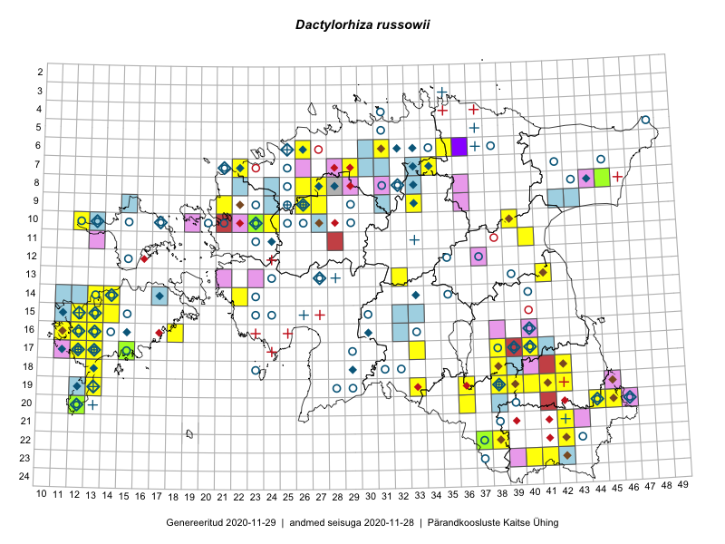

Dactylorhiza russowii — Russowi sõrmkäpp
Orchidaceae :: Dactylorhiza russowii (Klinge) Holub (546); Orchis russowii Klinge (16); Orchis traunsteineri auct. (8); Orchis angustifolia Wimm. et Grab. (5)

Kaart põhineb 951 kirjel:
vaatlusi 421
herbaareksemplare 154
PKÜ kirjeid1 2
ELFi kirjeid2 229
LVA kirjeid3 67
EELISe kirjeid4 78
Taime kaasaegsed ja ajaloolised leiukohad asuvad 173 ruudus.
Tingmärgid ja leidudega ruutude arvud periooditi uues (u) ja 2005 andmestikus (v)
| █ | vahemik | u5 | v6 |
|---|---|---|---|
| █ | 2006–2020 | 111 | – |
| ◆/◇ | 1971–2005 | 59 | 70 |
| ○ | 1921–1970 | 70 | 35 |
| + | kuni 1920 | 16 | 13 |
| × | hävinud | – | 0 |
| ? | kaheldav | – | 0 |
| Ruut | Leidja(d) | Leiuaeg | Kirje |
|---|---|---|---|
| 14-14 | Sirje Azarov, Mari Reitalu, Aira Alasi | 2020-07-23 | punkt: Dactylorhiza russowii (Klinge) Holub |
| 15-14 | Sirje Azarov, Mari Reitalu | 2020-07-21 | punkt: Dactylorhiza russowii (Klinge) Holub |
| 15-14 | Mari Reitalu, Sirje Azarov | 2020-07-21 | ruut/ala: Dactylorhiza russowii (Klinge) Holub |
| 08-26 | Eerik Leibak | 2020-07-16 | ELF: 24883 |
| 08-26 | Eerik Leibak | 2020-07-15 | ELF: 2758 |
| 07-22 | Kaili Kattai | 2020-07-11 | punkt: Dactylorhiza russowii (Klinge) Holub |
| 07-29 | Meeli Mesipuu | 2020-07-10 | punkt: Dactylorhiza russowii (Klinge) Holub |
| 07-29 | Meeli Mesipuu | 2020-07-10 | punkt: Dactylorhiza russowii (Klinge) Holub |
| 07-29 | Meeli Mesipuu | 2020-07-10 | punkt: Dactylorhiza russowii (Klinge) Holub |
| 19-40 | Avo Veermäe | 2020-07-10 | LVA: -84530584 |
| 19-40 | Avo Veermäe | 2020-07-10 | LVA: -1498533494 |
| 19-40 | Avo Veermäe | 2020-07-10 | LVA: 334742038 |
| 19-41 | Avo Veermäe | 2020-07-07 | LVA: -434434490 |
| 10-23 | Kaili Kattai | 2020-07-06 | punkt: Dactylorhiza russowii (Klinge) Holub |
| 20-36 | Ulvi Selgis, Enn Selgis, Angelika Portsmuth, Hans Albert William Portsmuth | 2020-07-05 | punkt: Dactylorhiza russowii (Klinge) Holub |
| 20-36 | Ulvi Selgis, Angelika Portsmuth, Hans Albert William Portsmuth, Enn Selgis | 2020-07-05 | punkt: Dactylorhiza russowii (Klinge) Holub |
| 20-36 | Ulvi Selgis, Angelika Portsmuth, Hans Albert William Portsmuth, Enn Selgis | 2020-07-05 | punkt: Dactylorhiza russowii (Klinge) Holub |
| 20-36 | Ulvi Selgis, Angelika Portsmuth, Hans Albert William Portsmuth, Enn Selgis | 2020-07-05 | punkt: Dactylorhiza russowii (Klinge) Holub |
| 20-36 | Ulvi Selgis, Angelika Portsmuth, Hans Albert William Portsmuth, Enn Selgis | 2020-07-05 | punkt: Dactylorhiza russowii (Klinge) Holub |
| 20-36 | Ulvi Selgis, Angelika Portsmuth, Hans Albert William Portsmuth, Enn Selgis | 2020-07-05 | punkt: Dactylorhiza russowii (Klinge) Holub |
| 20-36 | Ulvi Selgis, Angelika Portsmuth, Hans Albert William Portsmuth, Enn Selgis | 2020-07-05 | punkt: Dactylorhiza russowii (Klinge) Holub |
| 20-36 | Ulvi Selgis, Angelika Portsmuth, Hans Albert William Portsmuth, Enn Selgis | 2020-07-05 | punkt: Dactylorhiza russowii (Klinge) Holub |
| 20-36 | Ulvi Selgis, Angelika Portsmuth, Hans Albert William Portsmuth, Enn Selgis | 2020-07-05 | punkt: Dactylorhiza russowii (Klinge) Holub |
| 20-36 | Ulvi Selgis, Angelika Portsmuth, Hans Albert William Portsmuth, Enn Selgis | 2020-07-05 | punkt: Dactylorhiza russowii (Klinge) Holub |
| 20-36 | Ulvi Selgis, Angelika Portsmuth, Hans Albert William Portsmuth, Enn Selgis | 2020-07-05 | punkt: Dactylorhiza russowii (Klinge) Holub |
| 20-36 | Ulvi Selgis, Angelika Portsmuth, Hans Albert William Portsmuth, Enn Selgis | 2020-07-05 | punkt: Dactylorhiza russowii (Klinge) Holub |
| 20-36 | Ulvi Selgis, Angelika Portsmuth, Hans Albert William Portsmuth, Enn Selgis | 2020-07-05 | punkt: Dactylorhiza russowii (Klinge) Holub |
| 20-36 | Ulvi Selgis, Angelika Portsmuth, Hans Albert William Portsmuth, Enn Selgis | 2020-07-05 | punkt: Dactylorhiza russowii (Klinge) Holub |
| 20-36 | Ulvi Selgis, Angelika Portsmuth, Hans Albert William Portsmuth, Enn Selgis | 2020-07-05 | punkt: Dactylorhiza russowii (Klinge) Holub |
| 20-36 | Ulvi Selgis, Angelika Portsmuth, Hans Albert William Portsmuth, Enn Selgis | 2020-07-05 | punkt: Dactylorhiza russowii (Klinge) Holub |
| 20-36 | Ulvi Selgis, Angelika Portsmuth, Hans Albert William Portsmuth, Enn Selgis | 2020-07-05 | punkt: Dactylorhiza russowii (Klinge) Holub |
| 19-36 | Ulvi Selgis, Angelika Portsmuth, Hans Albert William Portsmuth, Enn Selgis | 2020-07-05 | punkt: Dactylorhiza russowii (Klinge) Holub |
| 19-38 | Sirje Azarov, Mari Reitalu, Riine Latserus | 2020-07-05 | punkt: Dactylorhiza russowii (Klinge) Holub |
| 20-36 | Merit Otsus, Ester Valdvee, Aare Laht, Tiiu-Maie Laht | 2020-07-05 | punkt: Dactylorhiza russowii (Klinge) Holub |
| 20-36 | Merit Otsus, Ester Valdvee, Aare Laht, Tiiu-Maie Laht | 2020-07-05 | punkt: Dactylorhiza russowii (Klinge) Holub |
| 20-36 | Merit Otsus, Ester Valdvee, Aare Laht, Tiiu-Maie Laht | 2020-07-05 | punkt: Dactylorhiza russowii (Klinge) Holub |
| 20-36 | Merit Otsus, Ester Valdvee, Aare Laht, Tiiu-Maie Laht | 2020-07-05 | punkt: Dactylorhiza russowii (Klinge) Holub |
| 20-36 | Merit Otsus, Ester Valdvee, Aare Laht, Tiiu-Maie Laht | 2020-07-05 | punkt: Dactylorhiza russowii (Klinge) Holub |
| 20-36 | Merit Otsus, Ester Valdvee, Aare Laht, Tiiu-Maie Laht | 2020-07-05 | punkt: Dactylorhiza russowii (Klinge) Holub |
| 20-36 | Merit Otsus, Ester Valdvee, Aare Laht, Tiiu-Maie Laht | 2020-07-05 | punkt: Dactylorhiza russowii (Klinge) Holub |
| 20-36 | Merit Otsus, Ester Valdvee, Aare Laht, Tiiu-Maie Laht | 2020-07-05 | punkt: Dactylorhiza russowii (Klinge) Holub |
| 20-36 | Merit Otsus, Ester Valdvee, Aare Laht, Tiiu-Maie Laht | 2020-07-05 | punkt: Dactylorhiza russowii (Klinge) Holub |
| 20-36 | Merit Otsus, Ester Valdvee, Aare Laht, Tiiu-Maie Laht | 2020-07-05 | punkt: Dactylorhiza russowii (Klinge) Holub |
| 20-36 | Merit Otsus, Ester Valdvee, Aare Laht, Tiiu-Maie Laht | 2020-07-05 | punkt: Dactylorhiza russowii (Klinge) Holub |
| 20-36 | Merit Otsus, Ester Valdvee, Aare Laht, Tiiu-Maie Laht | 2020-07-05 | punkt: Dactylorhiza russowii (Klinge) Holub |
| 20-36 | Merit Otsus, Ester Valdvee, Aare Laht, Tiiu-Maie Laht | 2020-07-05 | punkt: Dactylorhiza russowii (Klinge) Holub |
| 19-38 | Mari Reitalu, Sirje Azarov, Riine Latserus | 2020-07-05 | ruut/ala: Dactylorhiza russowii (Klinge) Holub |
| 19-38 | Mari Reitalu, Riine Latserus, Sirje Azarov | 2020-07-05 | punkt: Dactylorhiza russowii (Klinge) Holub |
| 19-38 | Mari Reitalu, Riine Latserus, Sirje Azarov | 2020-07-05 | punkt: Dactylorhiza russowii (Klinge) Holub |
| 19-38 | Mari Reitalu, Riine Latserus, Sirje Azarov | 2020-07-05 | punkt: Dactylorhiza russowii (Klinge) Holub |
| 19-38 | Mari Reitalu, Riine Latserus, Sirje Azarov | 2020-07-05 | punkt: Dactylorhiza russowii (Klinge) Holub |
| 19-38 | Mari Reitalu, Riine Latserus, Sirje Azarov | 2020-07-05 | punkt: Dactylorhiza russowii (Klinge) Holub |
| 19-38 | Mari Reitalu, Riine Latserus, Sirje Azarov | 2020-07-05 | punkt: Dactylorhiza russowii (Klinge) Holub |
| 19-38 | Mari Reitalu, Riine Latserus, Sirje Azarov | 2020-07-05 | punkt: Dactylorhiza russowii (Klinge) Holub |
| 19-38 | Mari Reitalu, Riine Latserus, Sirje Azarov | 2020-07-05 | punkt: Dactylorhiza russowii (Klinge) Holub |
| 19-38 | Mari Reitalu, Riine Latserus, Sirje Azarov | 2020-07-05 | punkt: Dactylorhiza russowii (Klinge) Holub |
| 19-38 | Mari Reitalu, Riine Latserus, Sirje Azarov | 2020-07-05 | punkt: Dactylorhiza russowii (Klinge) Holub |
| 19-38 | Mari Reitalu, Riine Latserus, Sirje Azarov | 2020-07-05 | punkt: Dactylorhiza russowii (Klinge) Holub |
| 18-38 | Jekaterina Aida, Kaisa Alla, Reet Ohna, Aiki Tibar, Arto-Randel Servet | 2020-07-05 | punkt: Dactylorhiza russowii (Klinge) Holub |
| 18-38 | Jekaterina Aida, Kaisa Alla, Reet Ohna, Aiki Tibar, Arto-Randel Servet | 2020-07-05 | punkt: Dactylorhiza russowii (Klinge) Holub |
| 18-38 | Ulvi Selgis, Enn Selgis, Angelika Portsmuth, Hans Albert William Portsmuth | 2020-07-04 | punkt: Dactylorhiza russowii (Klinge) Holub |
| 18-38 | Ulvi Selgis, Angelika Portsmuth, Hans Albert William Portsmuth, Enn Selgis | 2020-07-04 | punkt: Dactylorhiza russowii (Klinge) Holub |
| 18-38 | Ulvi Selgis, Angelika Portsmuth, Hans Albert William Portsmuth, Enn Selgis | 2020-07-04 | punkt: Dactylorhiza russowii (Klinge) Holub |
| 18-38 | Ulvi Selgis, Angelika Portsmuth, Hans Albert William Portsmuth, Enn Selgis | 2020-07-04 | punkt: Dactylorhiza russowii (Klinge) Holub |
| 19-38 | Jekaterina Aida, Kaisa Alla, Reet Ohna, Arto-Randel Servet, Tarmo Niitla | 2020-07-04 | punkt: Dactylorhiza russowii (Klinge) Holub |
| 19-38 | Jekaterina Aida, Kaisa Alla, Reet Ohna, Arto-Randel Servet, Tarmo Niitla | 2020-07-04 | punkt: Dactylorhiza russowii (Klinge) Holub |
| 19-38 | Jekaterina Aida, Kaisa Alla, Reet Ohna, Arto-Randel Servet, Tarmo Niitla | 2020-07-04 | punkt: Dactylorhiza russowii (Klinge) Holub |
| 19-38 | Jekaterina Aida, Kaisa Alla, Reet Ohna, Arto-Randel Servet, Tarmo Niitla | 2020-07-04 | punkt: Dactylorhiza russowii (Klinge) Holub |
| 19-38 | Jekaterina Aida, Kaisa Alla, Reet Ohna, Arto-Randel Servet, Tarmo Niitla | 2020-07-04 | punkt: Dactylorhiza russowii (Klinge) Holub |
| 19-38 | Jekaterina Aida, Kaisa Alla, Reet Ohna, Arto-Randel Servet, Tarmo Niitla | 2020-07-04 | punkt: Dactylorhiza russowii (Klinge) Holub |
| 19-38 | Jekaterina Aida, Kaisa Alla, Reet Ohna, Arto-Randel Servet, Tarmo Niitla | 2020-07-04 | punkt: Dactylorhiza russowii (Klinge) Holub |
| 19-38 | Jekaterina Aida, Kaisa Alla, Reet Ohna, Arto-Randel Servet, Tarmo Niitla | 2020-07-04 | punkt: Dactylorhiza russowii (Klinge) Holub |
| 19-39 | Ester Valdvee, Aare Laht, Tiiu-Maie Laht | 2020-07-04 | punkt: Dactylorhiza russowii (Klinge) Holub |
| 19-39 | Ester Valdvee, Aare Laht, Tiiu-Maie Laht | 2020-07-04 | punkt: Dactylorhiza russowii (Klinge) Holub |
| 19-39 | Ester Valdvee, Aare Laht, Tiiu-Maie Laht | 2020-07-04 | punkt: Dactylorhiza russowii (Klinge) Holub |
| 19-39 | Ester Valdvee, Aare Laht, Tiiu-Maie Laht | 2020-07-04 | punkt: Dactylorhiza russowii (Klinge) Holub |
| 19-39 | Ester Valdvee, Aare Laht, Tiiu-Maie Laht | 2020-07-04 | punkt: Dactylorhiza russowii (Klinge) Holub |
| 19-39 | Ester Valdvee, Aare Laht, Tiiu-Maie Laht | 2020-07-04 | punkt: Dactylorhiza russowii (Klinge) Holub |
| 19-39 | Ester Valdvee, Aare Laht, Tiiu-Maie Laht | 2020-07-04 | punkt: Dactylorhiza russowii (Klinge) Holub |
| 19-39 | Ester Valdvee, Aare Laht, Tiiu-Maie Laht | 2020-07-04 | punkt: Dactylorhiza russowii (Klinge) Holub |
| 19-39 | Ester Valdvee, Aare Laht, Tiiu-Maie Laht | 2020-07-04 | punkt: Dactylorhiza russowii (Klinge) Holub |
| 19-39 | Ester Valdvee, Aare Laht, Tiiu-Maie Laht | 2020-07-04 | punkt: Dactylorhiza russowii (Klinge) Holub |
| 19-39 | Ester Valdvee, Aare Laht, Tiiu-Maie Laht | 2020-07-04 | punkt: Dactylorhiza russowii (Klinge) Holub |
| 19-39 | Ester Valdvee, Aare Laht, Tiiu-Maie Laht | 2020-07-04 | punkt: Dactylorhiza russowii (Klinge) Holub |
| 19-39 | Ester Valdvee, Aare Laht, Tiiu-Maie Laht | 2020-07-04 | punkt: Dactylorhiza russowii (Klinge) Holub |
| 19-39 | Ester Valdvee, Aare Laht, Tiiu-Maie Laht | 2020-07-04 | punkt: Dactylorhiza russowii (Klinge) Holub |
| 19-39 | Ester Valdvee, Aare Laht, Tiiu-Maie Laht | 2020-07-04 | punkt: Dactylorhiza russowii (Klinge) Holub |
| 19-39 | Ester Valdvee, Aare Laht, Tiiu-Maie Laht | 2020-07-04 | punkt: Dactylorhiza russowii (Klinge) Holub |
| 19-39 | Ester Valdvee, Aare Laht, Tiiu-Maie Laht | 2020-07-04 | punkt: Dactylorhiza russowii (Klinge) Holub |
| 19-39 | Ester Valdvee, Aare Laht, Tiiu-Maie Laht | 2020-07-04 | punkt: Dactylorhiza russowii (Klinge) Holub |
| 19-39 | Ester Valdvee, Aare Laht, Tiiu-Maie Laht | 2020-07-04 | punkt: Dactylorhiza russowii (Klinge) Holub |
| 19-39 | Ester Valdvee, Aare Laht, Tiiu-Maie Laht | 2020-07-04 | punkt: Dactylorhiza russowii (Klinge) Holub |
| 19-39 | Ester Valdvee, Aare Laht, Tiiu-Maie Laht | 2020-07-04 | punkt: Dactylorhiza russowii (Klinge) Holub |
| 19-39 | Ester Valdvee, Aare Laht, Tiiu-Maie Laht | 2020-07-04 | punkt: Dactylorhiza russowii (Klinge) Holub |
| 18-38 | Avo Veermäe | 2020-07-04 | LVA: 604399208 |
| 17-15 | Rainar Kurbel, Toomas Hirse | 2020-07-01 | TAA0150752: Dactylorhiza russowii (Klinge) Holub |
| 17-15 | Toomas Kukk | 2020-06-30 | punkt: Dactylorhiza russowii (Klinge) Holub |
| 10-24 | Thea Kull | 2020-06-26 | punkt: Dactylorhiza russowii (Klinge) Holub |
| 17-12 | Ants Animägi | 2020-06-26 | LVA: -2013983714 |
| 17-12 | Ants Animägi | 2020-06-26 | LVA: 1157788162 |
| 07-29 | Toomas Kukk, Rein Kalamees, Martin Tikk | 2020-06-17 | PKÜ: 20755 |
| 10-23 | Tõnu Ploompuu | 2019-10-01 | ELF: 198 |
| 10-23 | Tõnu Ploompuu | 2019-09-07 | ELF: 193 |
| 17-13 | Sirje Azarov, Mari Reitalu | 2019-08-25 | ELF: 25 |
| 07-28;08-28 | Marje Talvis | 2019-08-25 | EELIS: -446656866 |
| 16-13 | Mari Reitalu, Sirje Azarov | 2019-08-15 | ruut/ala: Dactylorhiza russowii (Klinge) Holub |
| 16-13 | Mari Reitalu, Sirje Azarov | 2019-08-15 | ELF: 13 |
| 16-13 | Mari Reitalu, Sirje Azarov | 2019-08-15 | ELF: 14 |
| 16-13 | Mari Reitalu, Sirje Azarov | 2019-08-15 | ELF: 24783 |
| 17-41 | Toomas Hirse | 2019-08-13 | ELF: 10975 |
| 15-12 | Sirje Azarov, Mari Reitalu | 2019-08-06 | ELF: 2627 |
| 15-12 | Mari Reitalu, Sirje Azarov | 2019-08-06 | ruut/ala: Dactylorhiza russowii (Klinge) Holub |
| 06-31 | Timo Luhamäe, Peedu Saar | 2019-08-05 | punkt: Dactylorhiza russowii (Klinge) Holub |
| 16-12 | Sirje Azarov, Mari Reitalu | 2019-08-05 | punkt: Dactylorhiza russowii (Klinge) Holub |
| 16-12 | Sirje Azarov, Mari Reitalu | 2019-08-05 | punkt: Dactylorhiza russowii (Klinge) Holub |
| 16-12 | Sirje Azarov, Mari Reitalu | 2019-08-05 | ELF: 56 |
| 16-12 | Sirje Azarov, Mari Reitalu | 2019-08-05 | ELF: 61 |
| 19-41 | Avo Veermäe | 2019-08-01 | LVA: 323268040 |
| 19-41 | Avo Veermäe | 2019-08-01 | LVA: 453618220 |
| 19-41 | Avo Veermäe | 2019-08-01 | LVA: -970862838 |
| 19-41 | Avo Veermäe | 2019-08-01 | LVA: -961015780 |
| 16-12 | Mari Reitalu | 2019-07-23 | ELF: 734 |
| 13-32 | Eerik Leibak | 2019-07-20 | ELF: 1182 |
| 13-32 | Eerik Leibak | 2019-07-20 | ELF: 1183 |
| 13-32 | Eerik Leibak | 2019-07-20 | ELF: 1184 |
| 15-32 | Eerik Leibak | 2019-07-20 | ELF: 1252 |
| 16-12 | Sirje Azarov | 2019-07-19 | punkt: Dactylorhiza russowii (Klinge) Holub |
| 16-12 | Sirje Azarov | 2019-07-19 | ELF: 9928 |
| 17-13 | Sirje Azarov, Mari Reitalu | 2019-07-18 | punkt: Dactylorhiza russowii (Klinge) Holub |
| 17-13 | Mari Reitalu, Sirje Azarov | 2019-07-18 | ELF: 1 |
| 21-43 | Jarmo Jaanus | 2019-07-18 | EELIS: -74974390 |
| 18-42 | Avo Veermäe | 2019-07-17 | LVA: 1689848186 |
| 23-40 | Martin Küttim, Marko Vainu | 2019-07-16–2019-07-17 | ELF: 15246 |
| 17-38 | Peedu Saar, Ott Luuk | 2019-07-15 | ruut/ala: Dactylorhiza russowii (Klinge) Holub |
| 17-38 | Ott Luuk, Peedu Saar | 2019-07-15 | punkt: Dactylorhiza russowii (Klinge) Holub |
| 17-38 | Ott Luuk, Peedu Saar | 2019-07-15 | punkt: Dactylorhiza russowii (Klinge) Holub |
| 09-27 | Eerik Leibak | 2019-07-15 | ELF: 878 |
| 08-27;09-27 | Eerik Leibak | 2019-07-15 | ELF: 881 |
| 08-27 | Eerik Leibak | 2019-07-15 | ELF: 882 |
| 18-42 | Meeli Mesipuu | 2019-07-12 | punkt: Dactylorhiza russowii (Klinge) Holub |
| 18-42 | Meeli Mesipuu | 2019-07-12 | punkt: Dactylorhiza russowii (Klinge) Holub |
| 19-42 | Meeli Mesipuu | 2019-07-12 | punkt: Dactylorhiza russowii (Klinge) Holub |
| 19-38 | Thea Kull | 2019-07-11 | punkt: Dactylorhiza russowii (Klinge) Holub |
| 19-13 | Sirje Azarov, Mari Reitalu | 2019-07-11 | punkt: Dactylorhiza russowii (Klinge) Holub |
| 19-41 | Meeli Mesipuu | 2019-07-11 | ruut/ala: Dactylorhiza russowii (Klinge) Holub |
| 19-13 | Mari Reitalu, Sirje Azarov | 2019-07-11 | ruut/ala: Dactylorhiza russowii (Klinge) Holub |
| 19-13 | Mari Reitalu, Sirje Azarov | 2019-07-11 | ELF: 16770 |
| 20-45 | Ott Luuk, Tiit Hallikma | 2019-07-10 | punkt: Dactylorhiza russowii (Klinge) Holub |
| 19-41 | Meeli Mesipuu | 2019-07-10 | punkt: Dactylorhiza russowii (Klinge) Holub |
| 19-41 | Meeli Mesipuu | 2019-07-10 | punkt: Dactylorhiza russowii (Klinge) Holub |
| 17-40 | Avo Veermäe | 2019-07-09 | LVA: 802590014 |
| 17-40 | Avo Veermäe | 2019-07-09 | LVA: 1305432304 |
| 10-13 | Eerik Leibak | 2019-07-04 | ELF: 24697 |
| 17-40 | Avo Veermäe | 2019-07-04 | LVA: 1927581482 |
| 17-40 | Avo Veermäe | 2019-07-04 | LVA: -1284524636 |
| 17-40 | Avo Veermäe | 2019-07-02 | LVA: 1919675888 |
| 17-40 | Avo Veermäe | 2019-07-02 | LVA: -1268502862 |
| 17-40 | Avo Veermäe | 2019-07-02 | LVA: 137915572 |
| 17-40 | Avo Veermäe | 2019-07-02 | LVA: -1663811578 |
| 15-14 | Sirje Azarov | 2019-07-01 | punkt: Dactylorhiza russowii (Klinge) Holub |
| 17-12 | Mari Reitalu | 2019-07-01 | ELF: 4696 |
| 17-40 | Avo Veermäe | 2019-06-29 | LVA: 380571026 |
| 17-40 | Avo Veermäe | 2019-06-29 | LVA: 273287922 |
| 17-40 | Avo Veermäe | 2019-06-28 | LVA: -80229810 |
| 17-40 | Avo Veermäe | 2019-06-28 | LVA: 2037234634 |
| 17-40 | Avo Veermäe | 2019-06-28 | LVA: -979533480 |
| 17-40 | Avo Veermäe | 2019-06-28 | LVA: 1834961210 |
| 15-12 | Ants Animägi | 2019-06-28 | LVA: 54930158 |
| 15-12 | Ants Animägi | 2019-06-27 | LVA: -648171610 |
| 17-39 | Avo Veermäe | 2019-06-26 | LVA: -1078467770 |
| 17-39 | Avo Veermäe | 2019-06-22 | LVA: 517129488 |
| 17-40 | Meeli Mesipuu | 2019-06-19 | punkt: Dactylorhiza russowii (Klinge) Holub |
| 21-43 | Jarmo Jaanus | 2019-06-12 | EELIS: -1087905016 |
| 21-43 | Jarmo Jaanus | 2019-06-12 | EELIS: -964021338 |
| 21-43 | Jarmo Jaanus | 2019-06-12 | EELIS: -263197288 |
| 19-41 | Toomas Hirse | 2018-09-06 | ELF: 24635 |
| 20-44 | Toomas Kukk, Timo Luhamäe, Eerik Leibak | 2018-08-27 | ELF: 24679 |
| 20-44 | Toomas Kukk, Eerik Leibak, Timo Luhamäe | 2018-08-27 | punkt: Dactylorhiza russowii (Klinge) Holub |
| 17-13 | Sirje Azarov, Mari Reitalu | 2018-08-23 | punkt: Dactylorhiza russowii (Klinge) Holub |
| 17-13 | Sirje Azarov, Mari Reitalu | 2018-08-23 | punkt: Dactylorhiza russowii (Klinge) Holub |
| 17-13 | Mari Reitalu, Sirje Azarov | 2018-08-23 | ELF: 2069 |
| 08-22 | Tõnu Ploompuu, Priit Kukk | 2018-08-21 | ELF: 322 |
| 17-38 | Toomas Hirse | 2018-08-18 | ELF: 24610 |
| 13-32 | Eerik Leibak | 2018-08-18 | punkt: Dactylorhiza russowii (Klinge) Holub |
| 17-12 | Triin Reitalu, Mari Reitalu | 2018-08-11 | punkt: Dactylorhiza russowii (Klinge) Holub |
| 17-12 | Triin Reitalu, Mari Reitalu | 2018-08-11 | punkt: Dactylorhiza russowii (Klinge) Holub |
| 17-12 | Triin Reitalu, Mari Lepik | 2018-08-08 | punkt: Dactylorhiza russowii (Klinge) Holub |
| 17-12 | Triin Reitalu, Mari Lepik | 2018-08-08 | punkt: Dactylorhiza russowii (Klinge) Holub |
| 16-12 | Triin Reitalu, Mari Reitalu | 2018-08-03 | punkt: Dactylorhiza russowii (Klinge) Holub |
| 16-12 | Triin Reitalu, Mari Reitalu | 2018-08-03 | punkt: Dactylorhiza russowii (Klinge) Holub |
| 17-13 | Sirje Azarov, Mari Reitalu | 2018-07-24 | punkt: Dactylorhiza russowii (Klinge) Holub |
| 17-13 | Sirje Azarov, Mari Reitalu | 2018-07-24 | punkt: Dactylorhiza russowii (Klinge) Holub |
| 17-13 | Sirje Azarov, Mari Reitalu | 2018-07-24 | punkt: Dactylorhiza russowii (Klinge) Holub |
| 17-13 | Sirje Azarov, Mari Reitalu | 2018-07-24 | punkt: Dactylorhiza russowii (Klinge) Holub |
| 17-13 | Mari Reitalu, Sirje Azarov | 2018-07-24 | ELF: 486 |
| 20-12 | Sirje Azarov, Mari Reitalu | 2018-07-23 | punkt: Dactylorhiza russowii (Klinge) Holub |
| 20-12 | Mari Reitalu, Sirje Azarov | 2018-07-23 | ELF: 942 |
| 17-13 | Mari Reitalu, Sirje Azarov | 2018-07-23 | ELF: 1449 |
| 09-26 | Thea Kull | 2018-07-14 | punkt: Dactylorhiza russowii (Klinge) Holub |
| 09-26 | Thea Kull | 2018-07-14 | punkt: Dactylorhiza russowii (Klinge) Holub |
| 15-12 | Triin Reitalu, Ansis Blaus | 2018-07-12 | punkt: Dactylorhiza russowii (Klinge) Holub |
| 20-12 | Sirje Azarov, Mari Reitalu | 2018-07-12 | punkt: Dactylorhiza russowii (Klinge) Holub |
| 20-12 | Sirje Azarov, Mari Reitalu | 2018-07-12 | punkt: Dactylorhiza russowii (Klinge) Holub |
| 20-12 | Mari Reitalu, Sirje Azarov | 2018-07-12 | ELF: 935 |
| 20-12 | Mari Reitalu, Sirje Azarov | 2018-07-12 | ELF: 936 |
| 17-12;17-13 | Mari Reitalu, Sirje Azarov | 2018-07-12 | ELF: 2473 |
| 15-13 | Triin Reitalu, Ansis Blaus | 2018-07-11 | punkt: Dactylorhiza russowii (Klinge) Holub |
| 15-13 | Triin Reitalu, Ansis Blaus | 2018-07-11 | punkt: Dactylorhiza russowii (Klinge) Holub |
| 14-13 | Triin Reitalu, Ansis Blaus | 2018-07-10 | punkt: Dactylorhiza russowii (Klinge) Holub |
| 08-26 | Thea Kull | 2018-07-10 | punkt: Dactylorhiza russowii (Klinge) Holub |
| 20-12 | Sirje Azarov, Mari Reitalu | 2018-07-10 | punkt: Dactylorhiza russowii (Klinge) Holub |
| 16-12;17-12 | Mari Reitalu, Sirje Azarov | 2018-07-10 | ELF: 1659 |
| 20-12 | Mari Reitalu, Sirje Azarov | 2018-07-10 | ELF: 13405 |
| 17-12 | Mari Reitalu, Sirje Azarov | 2018-07-10 | ELF: 16272 |
| 14-14 | Triin Reitalu, Ansis Blaus | 2018-07-09 | punkt: Dactylorhiza russowii (Klinge) Holub |
| 07-29 | Thea Kull | 2018-07-09 | punkt: Dactylorhiza russowii (Klinge) Holub |
| 07-29 | Thea Kull | 2018-07-09 | punkt: Dactylorhiza russowii (Klinge) Holub |
| 11-40 | Ulvi Selgis, Eerika Purgel, Enn Selgis | 2018-07-08 | punkt: Dactylorhiza russowii (Klinge) Holub |
| 11-40 | Ulvi Selgis, Eerika Purgel, Enn Selgis | 2018-07-08 | punkt: Dactylorhiza russowii (Klinge) Holub |
| 11-40 | Ulvi Selgis, Eerika Purgel, Enn Selgis | 2018-07-08 | punkt: Dactylorhiza russowii (Klinge) Holub |
| 11-40 | Ulvi Selgis, Eerika Purgel, Enn Selgis | 2018-07-08 | punkt: Dactylorhiza russowii (Klinge) Holub |
| 11-40 | Ulvi Selgis, Eerika Purgel, Enn Selgis | 2018-07-08 | punkt: Dactylorhiza russowii (Klinge) Holub |
| 11-40 | Ulvi Selgis, Eerika Purgel, Enn Selgis | 2018-07-08 | punkt: Dactylorhiza russowii (Klinge) Holub |
| 11-40 | Ulvi Selgis | 2018-07-08 | LVA: -905119450 |
| 11-40 | Ulvi Selgis | 2018-07-08 | LVA: -899800854 |
| 11-40 | Enn Selgis | 2018-07-08 | LVA: -721198586 |
| 14-22 | Marje Loide | 2018-07-02 | punkt: Dactylorhiza russowii (Klinge) Holub |
| 18-38 | Avo Veermäe | 2018-07-01 | LVA: 867745180 |
| 17-40 | Avo Veermäe | 2018-06-30 | LVA: 388151706 |
| 17-40 | Avo Veermäe | 2018-06-29 | LVA: -39052184 |
| 10-21 | Vallo Mäemets | 2018-06-27 | LVA: -1378693964 |
| 13-41 | Ulvi Selgis, Enn Selgis | 2018-06-23 | punkt: Dactylorhiza russowii (Klinge) Holub |
| 13-41 | Enn Selgis | 2018-06-23 | LVA: 1520003424 |
| 19-41 | Avo Veermäe | 2018-06-20 | LVA: -1433075012 |
| 15-12 | Triin Edovald, Nele Jõessar, Katrin Kraav, Kairi Villak | 2018-06-16 | LVA: -1365363026 |
| 16-40 | Villem Kutti, Tarmo Niitla | 2018-06-13 | EELIS: -892192532 |
| 08-31 | Aat Sarv | 2018-06-11 | EELIS: -929216758 |
| 19-33 | Mari Reitalu, Elle Roosaluste | 2018-06-02–2018-06-03 | ruut/ala: Dactylorhiza russowii (Klinge) Holub |
| 22-42 | Kaili Kattai, Ester Kattai | 2017-08-14 | punkt: Dactylorhiza russowii (Klinge) Holub |
| 22-42 | Kaili Kattai, Ester Kattai | 2017-08-14 | punkt: Dactylorhiza russowii (Klinge) Holub |
| 22-42 | Kaili Kattai, Ester Kattai | 2017-08-14 | punkt: Dactylorhiza russowii (Klinge) Holub |
| 22-42 | Kaili Kattai, Ester Kattai | 2017-08-14 | punkt: Dactylorhiza russowii (Klinge) Holub |
| 22-42 | Kaili Kattai, Ester Kattai | 2017-08-14 | punkt: Dactylorhiza russowii (Klinge) Holub |
| 22-42 | Kaili Kattai, Ester Kattai | 2017-08-14 | punkt: Dactylorhiza russowii (Klinge) Holub |
| 22-42 | Kaili Kattai, Ester Kattai | 2017-08-14 | punkt: Dactylorhiza russowii (Klinge) Holub |
| 22-42 | Kaili Kattai, Ester Kattai | 2017-08-14 | punkt: Dactylorhiza russowii (Klinge) Holub |
| 22-42 | Kaili Kattai, Ester Kattai | 2017-08-14 | punkt: Dactylorhiza russowii (Klinge) Holub |
| 22-42 | Kaili Kattai, Ester Kattai | 2017-08-14 | punkt: Dactylorhiza russowii (Klinge) Holub |
| 22-42 | Kaili Kattai, Ester Kattai | 2017-08-14 | punkt: Dactylorhiza russowii (Klinge) Holub |
| 22-42 | Kaili Kattai, Ester Kattai | 2017-08-14 | punkt: Dactylorhiza russowii (Klinge) Holub |
| 22-42 | Kaili Kattai, Ester Kattai | 2017-08-14 | punkt: Dactylorhiza russowii (Klinge) Holub |
| 22-42 | Kaili Kattai, Ester Kattai | 2017-08-14 | punkt: Dactylorhiza russowii (Klinge) Holub |
| 22-42 | Kaili Kattai, Ester Kattai | 2017-08-14 | punkt: Dactylorhiza russowii (Klinge) Holub |
| 19-38 | Kaili Kattai | 2017-08-11 | punkt: Dactylorhiza russowii (Klinge) Holub |
| 19-38 | Kaili Kattai | 2017-08-11 | punkt: Dactylorhiza russowii (Klinge) Holub |
| 18-38 | Avo Veermäe | 2017-07-27 | LVA: -1810891066 |
| 18-38 | Avo Veermäe | 2017-07-27 | LVA: -1583681500 |
| 19-38 | Peedu Saar, Ott Luuk | 2017-07-25 | ruut/ala: Dactylorhiza russowii (Klinge) Holub |
| 19-38 | Ott Luuk, Peedu Saar | 2017-07-25 | punkt: Dactylorhiza russowii (Klinge) Holub |
| 19-38 | Ott Luuk, Peedu Saar | 2017-07-25 | punkt: Dactylorhiza russowii (Klinge) Holub |
| 20-41 | Avo Veermäe | 2017-07-24 | LVA: 550178496 |
| 20-41 | Avo Veermäe | 2017-07-24 | LVA: 1477684044 |
| 10-39 | Ulvi Selgis, Enn Selgis | 2017-07-21 | punkt: Dactylorhiza russowii (Klinge) Holub |
| 10-39 | Ulvi Selgis, Enn Selgis | 2017-07-21 | punkt: Dactylorhiza russowii (Klinge) Holub |
| 10-39 | Ulvi Selgis, Enn Selgis | 2017-07-21 | punkt: Dactylorhiza russowii (Klinge) Holub |
| 10-39 | Ulvi Selgis | 2017-07-21 | LVA: -875591516 |
| 06-31 | Peedu Saar, Ott Luuk | 2017-07-21 | ruut/ala: Dactylorhiza russowii (Klinge) Holub |
| 06-31 | Ott Luuk, Peedu Saar | 2017-07-21 | punkt: Dactylorhiza russowii (Klinge) Holub |
| 06-31 | Ott Luuk, Peedu Saar | 2017-07-21 | punkt: Dactylorhiza russowii (Klinge) Holub |
| 06-31 | Ott Luuk, Peedu Saar | 2017-07-21 | punkt: Dactylorhiza russowii (Klinge) Holub |
| 10-39 | Enn Selgis | 2017-07-21 | LVA: -740809840 |
| 10-39 | Enn Selgis | 2017-07-21 | LVA: -747289740 |
| 20-46 | Kaili Kattai, Helen Toom | 2017-07-20 | EELIS: -174516718 |
| 19-42 | Avo Veermäe | 2017-07-20 | LVA: -2002205456 |
| 19-42 | Avo Veermäe | 2017-07-20 | LVA: -2062048050 |
| 19-42 | Avo Veermäe | 2017-07-19 | LVA: -2096266320 |
| 22-38 | Triin Reitalu, Ansis Blaus | 2017-07-17 | punkt: Dactylorhiza russowii (Klinge) Holub |
| 18-42 | Avo Veermäe | 2017-07-11 | LVA: 138634982 |
| 18-42 | Avo Veermäe | 2017-07-11 | LVA: -482431084 |
| 18-42 | Avo Veermäe | 2017-07-11 | LVA: 606438512 |
| 18-42 | Avo Veermäe | 2017-07-11 | LVA: -548462344 |
| 18-42 | Avo Veermäe | 2017-07-11 | LVA: -619928560 |
| 16-12 | Triin Reitalu, Mari Reitalu | 2017-07-10 | punkt: Dactylorhiza russowii (Klinge) Holub |
| 18-38 | Avo Veermäe | 2017-07-09 | LVA: -581027324 |
| 18-38 | Avo Veermäe | 2017-07-06 | LVA: 36744726 |
| 18-38 | Avo Veermäe | 2017-07-06 | LVA: 399212794 |
| 17-40 | Ulvi Selgis | 2017-07-02 | punkt: Dactylorhiza russowii (Klinge) Holub |
| 17-40 | Ulvi Selgis | 2017-07-02 | LVA: -1091600916 |
| 07-26 | Aivar Hallang | 2017-06-30 | EELIS: -92859334 |
| 07-26 | Aivar Hallang | 2017-06-30 | EELIS: -89437630 |
| 18-41 | Avo Veermäe | 2017-06-29 | LVA: 1710689876 |
| 07-26 | Aivar Hallang | 2017-06-28 | EELIS: -44391892 |
| 18-38 | Avo Veermäe | 2017-06-24 | LVA: 1629644496 |
| 17-40 | Enn Selgis | 2017-06-22 | LVA: -275470406 |
| 09-33 | Sirje Azarov | 2017-06-21 | punkt: Dactylorhiza russowii (Klinge) Holub |
| 11-28 | Marika Arro, Triin Edovald, Nele Jõessar, Lauri Klein, Elen Neito, Merit Otsus, Reigo Roasto, Kaire Sirel, Margit Tennokene | 2017-06-19 | LVA: -1364822976 |
| 13-32 | Kristo Keevend, Triinu Keevend | 2017-06-18 | LVA: -1565805798 |
| 17-13 | Mari Reitalu, Triin Reitalu | 2016-09-04 | ruut/ala: Dactylorhiza russowii (Klinge) Holub |
| 17-13 | Mari Reitalu, Triin Reitalu | 2016-09-04 | punkt: Dactylorhiza russowii (Klinge) Holub |
| 16-12 | Mari Reitalu | 2016-08-28 | punkt: Dactylorhiza russowii (Klinge) Holub |
| 16-18 | Sirje Azarov, Mari Reitalu | 2016-08-10 | punkt: Dactylorhiza russowii (Klinge) Holub |
| 16-18 | Mari Reitalu, Sirje Azarov | 2016-08-08 | ruut/ala: Dactylorhiza russowii (Klinge) Holub |
| 18-13 | Sirje Azarov, Mari Reitalu | 2016-07-31 | punkt: Dactylorhiza russowii (Klinge) Holub |
| 18-13 | Mari Reitalu, Sirje Azarov | 2016-07-31 | ruut/ala: Dactylorhiza russowii (Klinge) Holub |
| 14-14 | Sirje Azarov, Mari Reitalu | 2016-07-26 | punkt: Dactylorhiza russowii (Klinge) Holub |
| 14-14 | Mari Reitalu, Sirje Azarov | 2016-07-26 | ruut/ala: Dactylorhiza russowii (Klinge) Holub |
| 13-32 | Thea Kull, Raivo Kalle, Susanna Vain | 2016-07-21 | ruut/ala: Dactylorhiza russowii (Klinge) Holub |
| 13-32 | Susanna Vain, Thea Kull, Raivo Kalle | 2016-07-21 | punkt: Dactylorhiza russowii (Klinge) Holub |
| 14-22 | Helene Urva | 2016-07-19 | LVA: -1999098630 |
| 06-26 | Ulvi Selgis | 2016-07-16 | punkt: Dactylorhiza russowii (Klinge) Holub |
| 06-26 | Enn Selgis | 2016-07-16 | LVA: 1441838550 |
| 16-38 | Toomas Hirse | 2016-07-13 | EELIS: -1940995184 |
| 07-22 | Mari Reitalu, Triin Reitalu, Sirje Azarov | 2016-07-10 | punkt: Dactylorhiza russowii (Klinge) Holub |
| 07-22 | Mari Reitalu, Eerik Leibak | 2016-07-07–2016-07-10 | ruut/ala: Dactylorhiza russowii (Klinge) Holub |
| 10-23 | Maret Gerz, Aat Sarv | 2016-07-06 | punkt: Dactylorhiza russowii (Klinge) Holub |
| 09-27 | Liina Oja, Rein Kalamees | 2016-07-06 | punkt: Dactylorhiza russowii (Klinge) Holub |
| 10-23 | Aat Sarv, Maret Gerz | 2016-07-06 | ruut/ala: Dactylorhiza russowii (Klinge) Holub |
| 17-13 | Meeli Mesipuu | 2016-07-01 | punkt: Dactylorhiza russowii (Klinge) Holub |
| 06-35 | Karin Kikas, Elle Rajandu | 2016-06-29 | punkt: Dactylorhiza russowii (Klinge) Holub |
| 06-35 | Karin Kikas, Elle Rajandu | 2016-06-29 | punkt: Dactylorhiza russowii (Klinge) Holub |
| 06-35 | Karin Kikas, Elle Rajandu | 2016-06-29 | punkt: Dactylorhiza russowii (Klinge) Holub |
| 21-42 | Sander Laherand, Ott Luuk | 2016-06-16 | ruut/ala: Dactylorhiza russowii (Klinge) Holub |
| 21-42 | Ott Luuk, Sander Laherand | 2016-06-16 | punkt: Dactylorhiza russowii (Klinge) Holub |
| 20-44 | Tarmo Niitla, Peedu Saar | 2016-06-15 | punkt: Dactylorhiza russowii (Klinge) Holub |
| 20-44 | Peedu Saar, Tarmo Niitla | 2016-06-15 | punkt: Dactylorhiza russowii (Klinge) Holub |
| 23-41 | Ott Luuk, Sander Laherand, Susanna Vain | 2016-06-15 | punkt: Dactylorhiza russowii (Klinge) Holub |
| 23-41 | Ott Luuk, Sander Laherand, Susanna Vain | 2016-06-15 | punkt: Dactylorhiza russowii (Klinge) Holub |
| 23-40 | Sander Laherand, Ott Luuk, Susanna Vain | 2016-06-14 | ruut/ala: Dactylorhiza russowii (Klinge) Holub |
| 23-40 | Ott Luuk, Sander Laherand, Susanna Vain | 2016-06-14 | punkt: Dactylorhiza russowii (Klinge) Holub |
| 23-40 | Ott Luuk, Sander Laherand, Susanna Vain | 2016-06-14 | punkt: Dactylorhiza russowii (Klinge) Holub |
| 19-40 | Toomas Kukk, Tiit Hallikma, Johannes Kõdar | 2016-06-13 | ruut/ala: Dactylorhiza russowii (Klinge) Holub |
| 19-38 | Timo Luhamäe, Meeli Mesipuu | 2016-06-13 | punkt: Dactylorhiza russowii (Klinge) Holub |
| 19-40 | Tiit Hallikma, Toomas Kukk | 2016-06-13 | punkt: Dactylorhiza russowii (Klinge) Holub |
| 19-39 | Tarmo Niitla, Peedu Saar | 2016-06-13 | punkt: Dactylorhiza russowii (Klinge) Holub |
| 19-39 | Peedu Saar, Tarmo Niitla | 2016-06-13 | ruut/ala: Dactylorhiza russowii (Klinge) Holub |
| 19-38 | Meeli Mesipuu, Timo Luhamäe | 2016-06-13 | ruut/ala: Dactylorhiza russowii (Klinge) Holub |
| 17-12 | Mari Reitalu | 2015-09-25 | punkt: Dactylorhiza russowii (Klinge) Holub |
| 16-13 | Mari Reitalu | 2015-08-29 | ruut/ala: Dactylorhiza russowii (Klinge) Holub |
| 16-12 | Mari Reitalu | 2015-08-23 | ruut/ala: Dactylorhiza russowii (Klinge) Holub |
| 16-12 | Mari Reitalu | 2015-08-23 | punkt: Dactylorhiza russowii (Klinge) Holub |
| 16-12 | Mari Reitalu | 2015-08-23 | punkt: Dactylorhiza russowii (Klinge) Holub |
| 17-13 | Mari Reitalu | 2015-08-16 | punkt: Dactylorhiza russowii (Klinge) Holub |
| 14-13 | Mari Reitalu, Triin Reitalu | 2015-08-14 | ruut/ala: Dactylorhiza russowii (Klinge) Holub |
| 17-12 | Mari Reitalu | 2015-08-13 | ruut/ala: Dactylorhiza russowii (Klinge) Holub |
| 17-12 | Mari Reitalu | 2015-08-13 | punkt: Dactylorhiza russowii (Klinge) Holub |
| 17-13 | Mari Reitalu, Oliver Parrest | 2015-08-12 | ruut/ala: Dactylorhiza russowii (Klinge) Holub |
| 17-12 | Mari Reitalu | 2015-08-11–2015-08-25 | ruut/ala: Dactylorhiza russowii (Klinge) Holub |
| 16-13 | Sirje Azarov, Aira Alasi | 2015-07-28 | ruut/ala: Dactylorhiza russowii (Klinge) Holub |
| 16-13 | Sirje Azarov, Aira Alasi | 2015-07-28 | punkt: Dactylorhiza russowii (Klinge) Holub |
| 16-13 | Mari Reitalu, Oliver Parrest | 2015-07-27 | ruut/ala: Dactylorhiza russowii (Klinge) Holub |
| 16-13 | Mari Reitalu, Oliver Parrest | 2015-07-27 | punkt: Dactylorhiza russowii (Klinge) Holub |
| 16-13 | Mari Reitalu, Oliver Parrest | 2015-07-27 | punkt: Dactylorhiza russowii (Klinge) Holub |
| 15-13 | Mari Reitalu, Oliver Parrest | 2015-07-24 | ruut/ala: Dactylorhiza russowii (Klinge) Holub |
| 17-15 | Karin Kikas, Elle Rajandu | 2015-07-22 | ruut/ala: Dactylorhiza russowii (Klinge) Holub |
| 15-12 | Mari Reitalu, Oliver Parrest | 2015-07-21 | ruut/ala: Dactylorhiza russowii (Klinge) Holub |
| 07-34 | Jana-Maria Habicht, Ester Valdvee | 2015-07-20 | ruut/ala: Dactylorhiza russowii (Klinge) Holub |
| 07-34 | Jana-Maria Habicht, Ester Valdvee | 2015-07-20 | punkt: Dactylorhiza russowii (Klinge) Holub |
| 07-34 | Jana-Maria Habicht, Ester Valdvee | 2015-07-20 | punkt: Dactylorhiza russowii (Klinge) Holub |
| 07-34 | Jana-Maria Habicht, Ester Valdvee | 2015-07-20 | punkt: Dactylorhiza russowii (Klinge) Holub |
| 07-34 | Jana-Maria Habicht, Ester Valdvee | 2015-07-20 | punkt: Dactylorhiza russowii (Klinge) Holub |
| 17-33 | Maria Abakumova, Helle Mäemets | 2015-07-03 | ruut/ala: Dactylorhiza russowii (Klinge) Holub |
| 17-33 | Maria Abakumova, Helle Mäemets | 2015-07-03 | punkt: Dactylorhiza russowii (Klinge) Holub |
| 17-12 | Mari Reitalu | 2015-07-02 | ruut/ala: Dactylorhiza russowii (Klinge) Holub |
| 22-37 | Silvia Pihu | 2015-06-27 | ruut/ala: Dactylorhiza russowii (Klinge) Holub |
| 22-37 | Silvia Pihu | 2015-06-27 | TU309723: Dactylorhiza russowii (Klinge) Holub |
| 10-12 | Eeva-Maria Jeletsky, Tarmo Niitla | 2015-06-26 | punkt: Dactylorhiza russowii (Klinge) Holub |
| 10-12 | Eeva-Maria Jeletsky, Tarmo Niitla | 2015-06-26 | ruut/ala: Dactylorhiza russowii (Klinge) Holub |
| 15-12 | Mari Reitalu, Oliver Parrest | 2015-06-21 | punkt: Dactylorhiza russowii (Klinge) Holub |
| 17-40 | Thea Kull, Peedu Saar | 2015-06-19 | ruut/ala: Dactylorhiza russowii (Klinge) Holub |
| 17-40 | Peedu Saar, Thea Kull | 2015-06-19 | punkt: Dactylorhiza russowii (Klinge) Holub |
| 17-12 | Mari Reitalu | 2015-06-19 | ruut/ala: Dactylorhiza russowii (Klinge) Holub |
| 17-12 | Mari Reitalu | 2015-06-19 | punkt: Dactylorhiza russowii (Klinge) Holub |
| 13-21 | Rainar Kurbel | 2015-06-18 | EELIS: 1214992942 |
| 15-12 | Esa Ervasti | 2015-06-15 | punkt: Dactylorhiza russowii (Klinge) Holub |
| 17-12 | Mari Reitalu | 2014-09-02 | ruut/ala: Dactylorhiza russowii (Klinge) Holub |
| 17-12 | Mari Reitalu | 2014-08-31 | ruut/ala: Dactylorhiza russowii (Klinge) Holub |
| 17-40 | Karin Kaljund, Marilin Mõtlep | 2014-08-22 | punkt: Dactylorhiza russowii (Klinge) Holub |
| 19-41 | Mirjam Metsare | 2014-08-08 | punkt: Dactylorhiza russowii (Klinge) Holub |
| 19-41 | Karin Kaljund, Mirjam Metsare | 2014-08-08 | punkt: Dactylorhiza russowii (Klinge) Holub |
| 18-38 | Mirjam Metsare | 2014-08-01 | punkt: Dactylorhiza russowii (Klinge) Holub |
| 18-38 | Karin Kaljund, Mirjam Metsare | 2014-08-01 | punkt: Dactylorhiza russowii (Klinge) Holub |
| 18-38 | Karin Kaljund, Mirjam Metsare | 2014-08-01 | punkt: Dactylorhiza russowii (Klinge) Holub |
| 18-38 | Karin Kaljund, Mirjam Metsare | 2014-08-01 | punkt: Dactylorhiza russowii (Klinge) Holub |
| 16-12 | Mari Reitalu | 2014-07-22 | punkt: Dactylorhiza russowii (Klinge) Holub |
| 09-33 | Ester Valdvee | 2014-07-19 | punkt: Dactylorhiza russowii (Klinge) Holub |
| 09-33 | Ester Valdvee | 2014-07-19 | punkt: Dactylorhiza russowii (Klinge) Holub |
| 10-12 | Aat Sarv | 2014-07-17 | punkt: Dactylorhiza russowii (Klinge) Holub |
| 07-29 | Jüri Kõiv | 2014-07-09 | LVA: -199711224 |
| 12-37 | Toomas Hirse | 2014-07-03 | EELIS: 2024519198 |
| 12-37 | Toomas Hirse | 2014-07-03 | EELIS: 2099820062 |
| 07-29 | Maris Rattur, Sille Janson | 2014-06-16 | punkt: Dactylorhiza russowii (Klinge) Holub |
| 16-12 | Mari Reitalu | 2013-09-13 | punkt: Dactylorhiza russowii (Klinge) Holub |
| 17-13 | Mari Reitalu | 2013-09-12 | punkt: Dactylorhiza russowii (Klinge) Holub |
| 16-13 | Mari Reitalu, Triin Reitalu | 2013-09-04 | punkt: Dactylorhiza russowii (Klinge) Holub |
| 16-13 | Mari Reitalu | 2013-09-03 | punkt: Dactylorhiza russowii (Klinge) Holub |
| 17-12 | Mari Reitalu | 2013-08-29 | punkt: Dactylorhiza russowii (Klinge) Holub |
| 16-12 | Mari Reitalu | 2013-08-23 | punkt: Dactylorhiza russowii (Klinge) Holub |
| 17-12 | Mari Reitalu | 2013-08-21 | punkt: Dactylorhiza russowii (Klinge) Holub |
| 17-12 | Mari Reitalu | 2013-08-21 | punkt: Dactylorhiza russowii (Klinge) Holub |
| 08-27 | Aat Sarv | 2013-08-19 | punkt: Dactylorhiza russowii (Klinge) Holub |
| 15-13 | Mari Reitalu, Triin Reitalu | 2013-08-18 | ruut/ala: Dactylorhiza russowii (Klinge) Holub |
| 16-13 | Mari Reitalu, Triin Reitalu | 2013-08-18 | punkt: Dactylorhiza russowii (Klinge) Holub |
| 16-12 | Mari Reitalu | 2013-08-16 | punkt: Dactylorhiza russowii (Klinge) Holub |
| 17-12 | Mari Reitalu | 2013-08-15 | punkt: Dactylorhiza russowii (Klinge) Holub |
| 17-12 | Mari Reitalu | 2013-08-14 | punkt: Dactylorhiza russowii (Klinge) Holub |
| 09-21 | Uve Ramst | 2013-08-05 | punkt: Dactylorhiza russowii (Klinge) Holub |
| 17-40 | Kaire Lanno, Karin Kaljund | 2013-08-05 | punkt: Dactylorhiza russowii (Klinge) Holub |
| 17-40 | Kaire Lanno, Karin Kaljund | 2013-08-05 | punkt: Dactylorhiza russowii (Klinge) Holub |
| 17-40 | Kaire Lanno, Karin Kaljund | 2013-08-05 | punkt: Dactylorhiza russowii (Klinge) Holub |
| 17-40 | Kaire Lanno, Karin Kaljund | 2013-08-05 | punkt: Dactylorhiza russowii (Klinge) Holub |
| 17-40 | Kaire Lanno, Karin Kaljund | 2013-08-05 | punkt: Dactylorhiza russowii (Klinge) Holub |
| 17-40 | Kaire Lanno, Karin Kaljund | 2013-08-05 | punkt: Dactylorhiza russowii (Klinge) Holub |
| 09-26 | Uve Ramst | 2013-08-02 | punkt: Dactylorhiza russowii (Klinge) Holub |
| 09-26 | Uve Ramst | 2013-08-02 | punkt: Dactylorhiza russowii (Klinge) Holub |
| 20-12 | Jana-Maria Habicht | 2013-07-31 | punkt: Dactylorhiza russowii (Klinge) Holub |
| 06-26 | Mari Reitalu | 2013-07-13 | punkt: Dactylorhiza russowii (Klinge) Holub |
| 07-29 | Maret Gerz, Ott Luuk, Peedu Saar | 2013-06-18 | punkt: Dactylorhiza russowii (Klinge) Holub |
| 08-45 | Katrin Jürgens | 2013-06-06 | TAA0112125: Dactylorhiza russowii (Klinge) Holub |
| 09-42;09-43 | Eerik Leibak | 2013-06-06 | ELF: 23818 |
| 08-44 | Katrin Jürgens | 2013-06-05 | EELIS: 644710056 |
| 16-13 | Mari Reitalu | 2012-09-17 | punkt: Dactylorhiza russowii (Klinge) Holub |
| 17-12 | Mari Reitalu | 2012-09-02 | ELF: 23997 |
| 17-13 | Mari Reitalu | 2012-09-02 | ELF: 23026 |
| 17-13 | Mari Reitalu | 2012-09-02 | ELF: 23027 |
| 15-14 | Mari Reitalu | 2012-08-25 | ELF: 2190 |
| 15-13 | Mari Reitalu | 2012-08-24 | ELF: 1293 |
| 15-13 | Mari Reitalu | 2012-08-24 | ELF: 23989 |
| 15-13 | Mari Reitalu | 2012-08-24 | ELF: 23986 |
| 15-13 | Mari Reitalu | 2012-08-24 | ELF: 23988 |
| 14-13 | Mari Reitalu | 2012-08-21 | punkt: Dactylorhiza russowii (Klinge) Holub |
| 14-13 | Mari Reitalu | 2012-08-21 | ELF: 1307 |
| 17-13 | Mari Reitalu | 2012-08-15 | ELF: 6671 |
| 17-13 | Mari Reitalu | 2012-08-15 | ELF: 23519 |
| 17-13 | Mari Reitalu | 2012-08-15 | ELF: 23520 |
| 16-12 | Mari Reitalu | 2012-08-10 | ELF: 1323 |
| 16-12 | Mari Reitalu | 2012-08-05 | ELF: 1316 |
| 16-12 | Mari Reitalu | 2012-08-05 | ELF: 1315 |
| 17-12 | Mari Reitalu | 2012-08-01 | ELF: 1312 |
| 17-12 | Mari Reitalu | 2012-08-01 | ELF: 23518 |
| 16-12 | Mari Reitalu | 2012-08-01 | ELF: 1314 |
| 16-12 | Mari Reitalu | 2012-08-01 | ELF: 23966 |
| 16-12 | Mari Reitalu | 2012-08-01 | ELF: 23970 |
| 16-12 | Mari Reitalu | 2012-08-01 | ELF: 23971 |
| 14-11 | Mari Reitalu | 2012-07-26 | ELF: 23190 |
| 09-24 | Tõnu Ploompuu | 2012-07-17 | ELF: 23866 |
| 10-23 | Mare Leis, Thea Kull | 2012-07-17 | punkt: Dactylorhiza russowii (Klinge) Holub |
| 10-23 | Mare Leis, Thea Kull | 2012-07-17 | punkt: Dactylorhiza russowii (Klinge) Holub |
| 10-23 | Mare Leis, Thea Kull | 2012-07-17 | punkt: Dactylorhiza russowii (Klinge) Holub |
| 10-23 | Mare Leis, Thea Kull | 2012-07-17 | punkt: Dactylorhiza russowii (Klinge) Holub |
| 10-23 | Mare Leis, Thea Kull | 2012-07-17 | punkt: Dactylorhiza russowii (Klinge) Holub |
| 10-23 | Mare Leis, Thea Kull | 2012-07-17 | punkt: Dactylorhiza russowii (Klinge) Holub |
| 10-23 | Mare Leis, Thea Kull | 2012-07-17 | punkt: Dactylorhiza russowii (Klinge) Holub |
| 10-23 | Mare Leis, Thea Kull | 2012-07-17 | punkt: Dactylorhiza russowii (Klinge) Holub |
| 10-23 | Mare Leis, Thea Kull | 2012-07-17 | punkt: Dactylorhiza russowii (Klinge) Holub |
| 10-23 | Mare Leis, Thea Kull | 2012-07-17 | punkt: Dactylorhiza russowii (Klinge) Holub |
| 10-23 | Mare Leis, Thea Kull | 2012-07-17 | punkt: Dactylorhiza russowii (Klinge) Holub |
| 10-23 | Mare Leis, Thea Kull | 2012-07-17 | punkt: Dactylorhiza russowii (Klinge) Holub |
| 10-23 | Mare Leis, Thea Kull | 2012-07-17 | punkt: Dactylorhiza russowii (Klinge) Holub |
| 10-23 | Mare Leis, Thea Kull | 2012-07-17 | punkt: Dactylorhiza russowii (Klinge) Holub |
| 10-23 | Mare Leis, Thea Kull | 2012-07-17 | punkt: Dactylorhiza russowii (Klinge) Holub |
| 10-23 | Mare Leis, Thea Kull | 2012-07-17 | punkt: Dactylorhiza russowii (Klinge) Holub |
| 10-23 | Mare Leis, Thea Kull | 2012-07-17 | punkt: Dactylorhiza russowii (Klinge) Holub |
| 10-23 | Mare Leis, Thea Kull | 2012-07-17 | punkt: Dactylorhiza russowii (Klinge) Holub |
| 10-23 | Mare Leis, Thea Kull | 2012-07-17 | punkt: Dactylorhiza russowii (Klinge) Holub |
| 10-23 | Thea Kull | 2012-07-15 | TAA0112587: Dactylorhiza russowii (Klinge) Holub |
| 10-23 | Peedu Saar, Ott Luuk | 2012-07-12 | punkt: Dactylorhiza russowii (Klinge) Holub |
| 10-23 | Ott Luuk, Peedu Saar | 2012-07-12 | punkt: Dactylorhiza russowii (Klinge) Holub |
| 18-42 | Eerik Leibak | 2012-07-03 | ELF: 23493 |
| 18-42 | Eerik Leibak | 2012-07-03 | ELF: 23494 |
| 14-17 | Sirje Azarov | 2012-06-26 | ELF: 23951 |
| 10-27 | Eerik Leibak | 2012-06-26 | ELF: 23782 |
| 08-27 | Eerik Leibak | 2012-06-24 | ELF: 23780 |
| 08-27 | Eerik Leibak | 2012-06-24 | ELF: 23781 |
| 13-23 | Mati Ilomets, Laimdota Truus | 2012-06-18 | EELIS: 2002253984 |
| 11-13 | Rita Miller | 2012-06-15 | EELIS: -641259317 |
| 20-38 | Eerik Leibak | 2011-07-02 | ELF: 23330 |
| 19-38 | Eerik Leibak | 2011-06-29 | ELF: 23222 |
| 10-39 | Tõnu Ploompuu | 2011 | ELF: 17757 |
| 08-27 | Arne Kivistik | 2010-09-27 | ELF: 3013 |
| 16-12 | Mari Reitalu | 2010-09-26 | ELF: 17108 |
| 16-13 | Mari Reitalu, Elo Hermann | 2010-09-24 | ELF: 17125 |
| 15-13 | Mari Reitalu, Elo Hermann | 2010-09-23 | ELF: 17164 |
| 15-13;16-13 | Mari Reitalu, Elo Hermann | 2010-09-23 | ELF: 17170 |
| 16-13 | Mari Reitalu, Elo Hermann | 2010-09-23 | ELF: 17171 |
| 15-13 | Mari Reitalu, Elo Hermann | 2010-09-23 | ELF: 1294 |
| 16-12 | Mari Reitalu | 2010-09-17 | ELF: 17096 |
| 15-12 | Mari Reitalu | 2010-09-09 | ELF: 16487 |
| 17-13 | Mari Reitalu | 2010-08-31 | ELF: 16375 |
| 17-12;17-13 | Mari Reitalu | 2010-08-31 | ELF: 16378 |
| 17-13 | Mari Reitalu | 2010-08-31 | ELF: 16379 |
| 17-13 | Mari Reitalu | 2010-08-31 | ELF: 2068 |
| 17-13 | Mari Reitalu | 2010-08-31 | ELF: 226 |
| 16-32 | Maria Knüpffer | 2010-08-23 | ELF: 2681 |
| 14-11 | Mari Reitalu | 2010-08-23 | ELF: 16444 |
| 15-12 | Mari Reitalu | 2010-08-23 | ELF: 16448 |
| 15-12 | Mari Reitalu | 2010-08-23 | ELF: 16449 |
| 15-11 | Eerik Leibak | 2010-08-23 | ELF: 15811 |
| 15-11 | Mari Reitalu | 2010-08-17 | ELF: 16420 |
| 15-13 | Raul Melsas | 2010-08-16 | ELF: 20989 |
| 08-33 | Indrek Hiiesalu | 2010-08-14 | ELF: 18923 |
| 17-12 | Mari Reitalu | 2010-08-11 | ELF: 16370 |
| 17-13 | Mari Reitalu | 2010-08-11 | ELF: 16372 |
| 17-12 | Mari Reitalu | 2010-08-11 | ELF: 16373 |
| 16-11 | Mari Reitalu | 2010-08-05 | ELF: 1854 |
| 10-19 | Madli Linder | 2010-07-31 | EELIS: 878775675 |
| 10-19 | E. Absalon, Madli Linder | 2010-07-31 | EELIS: 1653852860 |
| 15-12 | Mari Reitalu | 2010-07-30 | ELF: 17058 |
| 15-12 | Mari Reitalu | 2010-07-30 | ELF: 17059 |
| 15-12 | Mari Reitalu | 2010-07-30 | ELF: 17060 |
| 15-12 | Mari Reitalu | 2010-07-30 | ELF: 17061 |
| 07-33 | Indrek Hiiesalu | 2010-07-30 | ELF: 18866 |
| 19-12 | Eerik Leibak, Vilge Lahtmets | 2010-07-28 | ELF: 16858 |
| 23-42 | Toomas Hirse, Jaanus Tanilsoo | 2010-07-27 | ELF: 14672 |
| 10-27 | Aat Sarv | 2010-07-27 | ELF: 17925 |
| 10-27 | Aat Sarv | 2010-07-27 | ELF: 2362 |
| 14-13 | Rein Nellis, Raul Melsas | 2010-07-26 | ELF: 20938 |
| 15-12;15-13 | Rein Nellis, Raul Melsas | 2010-07-26 | ELF: 20944 |
| 14-13;15-13 | Rein Nellis, Raul Melsas | 2010-07-26 | ELF: 20946 |
| 14-12;14-13 | Rein Nellis, Raul Melsas | 2010-07-26 | ELF: 20947 |
| 17-12 | Mari Reitalu | 2010-07-25 | ELF: 16352 |
| 17-12 | Mari Reitalu | 2010-07-25 | ELF: 16353 |
| 17-12 | Mari Reitalu | 2010-07-25 | ELF: 16354 |
| 14-13;15-13 | Rein Nellis, Raul Melsas | 2010-07-23 | ELF: 20935 |
| 15-13 | Rein Nellis, Raul Melsas | 2010-07-23 | ELF: 20954 |
| 08-24 | Eerik Leibak | 2010-07-23 | ELF: 15760 |
| 15-13 | Rein Nellis, Raul Melsas | 2010-07-20 | ELF: 2564 |
| 15-12 | Rein Nellis, Raul Melsas | 2010-07-19 | ELF: 20918 |
| 17-12 | Mari Reitalu | 2010-07-19 | ELF: 16281 |
| 19-39 | Margit Turb, Tarmo Evestus | 2010-07-15 | ELF: 20094 |
| 06-26 | Eerik Leibak | 2010-07-15 | ELF: 15736 |
| 09-15 | Liina Remm | 2010-07-11 | ELF: 17257 |
| 08-36 | Ester Valdvee | 2010-07-07 | EELIS: 548132912 |
| 08-36 | Ester Valdvee | 2010-07-07 | EELIS: 1047535729 |
| 08-36;09-36 | Ester Valdvee | 2010-07-07 | EELIS: 2064428363 |
| 09-31 | Arne Kivistik | 2010-07-01 | ELF: 1072 |
| 10-27 | Aat Sarv | 2010-07-01 | ELF: 17917 |
| 19-39 | Margit Turb, Tarmo Evestus | 2010-06-30 | ELF: 20089 |
| 18-39 | Margit Turb, Tarmo Evestus | 2010-06-30 | ELF: 20091 |
| 17-40 | Ott Luuk, Peedu Saar | 2010-06-24 | punkt: Dactylorhiza russowii (Klinge) Holub |
| 17-40 | Peedu Saar | 2010-06-23 | punkt: Dactylorhiza russowii (Klinge) Holub |
| 17-40 | Peedu Saar | 2010-06-23 | punkt: Dactylorhiza russowii (Klinge) Holub |
| 17-40 | Peedu Saar | 2010-06-23 | punkt: Dactylorhiza russowii (Klinge) Holub |
| 17-40 | Peedu Saar | 2010-06-23 | punkt: Dactylorhiza russowii (Klinge) Holub |
| 17-40 | Peedu Saar | 2010-06-23 | punkt: Dactylorhiza russowii (Klinge) Holub |
| 17-40 | Peedu Saar | 2010-06-23 | punkt: Dactylorhiza russowii (Klinge) Holub |
| 17-40 | Peedu Saar | 2010-06-23 | punkt: Dactylorhiza russowii (Klinge) Holub |
| 17-40 | Peedu Saar | 2010-06-23 | punkt: Dactylorhiza russowii (Klinge) Holub |
| 17-40 | Peedu Saar | 2010-06-23 | punkt: Dactylorhiza russowii (Klinge) Holub |
| 17-40 | Peedu Saar | 2010-06-23 | punkt: Dactylorhiza russowii (Klinge) Holub |
| 17-40 | Peedu Saar | 2010-06-23 | punkt: Dactylorhiza russowii (Klinge) Holub |
| 17-40 | Peedu Saar | 2010-06-23 | punkt: Dactylorhiza russowii (Klinge) Holub |
| 17-40 | Peedu Saar | 2010-06-23 | punkt: Dactylorhiza russowii (Klinge) Holub |
| 17-40 | Ott Luuk, Peedu Saar | 2010-06-23 | punkt: Dactylorhiza russowii (Klinge) Holub |
| 17-40 | Ott Luuk, Peedu Saar | 2010-06-23 | punkt: Dactylorhiza russowii (Klinge) Holub |
| 17-40 | Ott Luuk, Peedu Saar | 2010-06-23 | punkt: Dactylorhiza russowii (Klinge) Holub |
| 17-40 | Ott Luuk, Peedu Saar | 2010-06-23 | punkt: Dactylorhiza russowii (Klinge) Holub |
| 17-40 | Ott Luuk, Peedu Saar | 2010-06-23 | punkt: Dactylorhiza russowii (Klinge) Holub |
| 17-40 | Ott Luuk, Peedu Saar | 2010-06-23 | punkt: Dactylorhiza russowii (Klinge) Holub |
| 17-40 | Ott Luuk, Peedu Saar | 2010-06-23 | punkt: Dactylorhiza russowii (Klinge) Holub |
| 17-40 | Ott Luuk, Peedu Saar | 2010-06-23 | punkt: Dactylorhiza russowii (Klinge) Holub |
| 17-40 | Ott Luuk, Peedu Saar | 2010-06-23 | punkt: Dactylorhiza russowii (Klinge) Holub |
| 17-40 | Ott Luuk, Peedu Saar | 2010-06-23 | punkt: Dactylorhiza russowii (Klinge) Holub |
| 17-40 | Ott Luuk, Peedu Saar | 2010-06-23 | punkt: Dactylorhiza russowii (Klinge) Holub |
| 17-40 | Ott Luuk, Peedu Saar | 2010-06-23 | punkt: Dactylorhiza russowii (Klinge) Holub |
| 17-40 | Ott Luuk, Peedu Saar | 2010-06-23 | punkt: Dactylorhiza russowii (Klinge) Holub |
| 17-40 | Ott Luuk, Peedu Saar | 2010-06-23 | punkt: Dactylorhiza russowii (Klinge) Holub |
| 17-40 | Ott Luuk, Peedu Saar | 2010-06-23 | punkt: Dactylorhiza russowii (Klinge) Holub |
| 17-40 | Ott Luuk, Peedu Saar | 2010-06-23 | punkt: Dactylorhiza russowii (Klinge) Holub |
| 17-40 | Ott Luuk, Peedu Saar | 2010-06-23 | punkt: Dactylorhiza russowii (Klinge) Holub |
| 17-40 | Ott Luuk, Peedu Saar | 2010-06-23 | punkt: Dactylorhiza russowii (Klinge) Holub |
| 17-40 | Ott Luuk, Peedu Saar | 2010-06-23 | punkt: Dactylorhiza russowii (Klinge) Holub |
| 17-40 | Ott Luuk, Peedu Saar | 2010-06-23 | punkt: Dactylorhiza russowii (Klinge) Holub |
| 17-40 | Ott Luuk, Peedu Saar | 2010-06-23 | punkt: Dactylorhiza russowii (Klinge) Holub |
| 17-40 | Ott Luuk, Peedu Saar | 2010-06-23 | punkt: Dactylorhiza russowii (Klinge) Holub |
| 17-40 | Ott Luuk, Peedu Saar | 2010-06-23 | punkt: Dactylorhiza russowii (Klinge) Holub |
| 17-40 | Ott Luuk, Peedu Saar | 2010-06-23 | punkt: Dactylorhiza russowii (Klinge) Holub |
| 17-40 | Ott Luuk, Peedu Saar | 2010-06-23 | punkt: Dactylorhiza russowii (Klinge) Holub |
| 17-40 | Ott Luuk, Peedu Saar | 2010-06-23 | punkt: Dactylorhiza russowii (Klinge) Holub |
| 17-40 | Ott Luuk, Peedu Saar | 2010-06-23 | punkt: Dactylorhiza russowii (Klinge) Holub |
| 17-40 | Ott Luuk, Peedu Saar | 2010-06-23 | punkt: Dactylorhiza russowii (Klinge) Holub |
| 17-40 | Ott Luuk, Peedu Saar | 2010-06-23 | punkt: Dactylorhiza russowii (Klinge) Holub |
| 17-13 | Oliver Parrest | 2010-06-18 | ELF: 16714 |
| 22-42 | Daniel Savka, Ardo Aamer | 2010-06-14 | ELF: 17355 |
| 16-11 | Mari Reitalu | 2010-06-06 | ELF: 4369 |
| 08-27 | Arne Kivistik | 2009-10-10 | ELF: 264 |
| 17-13 | Mari Reitalu | 2009-09-25 | ELF: 11141 |
| 17-13 | Mari Reitalu | 2009-09-24 | ELF: 2636 |
| 17-13 | Mari Reitalu | 2009-09-24 | ELF: 2637 |
| 17-13 | Mari Reitalu | 2009-09-24 | ELF: 11136 |
| 16-13 | Mari Reitalu | 2009-09-23 | ELF: 3691 |
| 17-13 | Mari Reitalu | 2009-09-23 | ELF: 11129 |
| 17-13 | Mari Reitalu | 2009-09-23 | ELF: 11131 |
| 16-13;17-13 | Mari Reitalu | 2009-09-23 | ELF: 11135 |
| 16-13 | Mari Reitalu | 2009-09-17 | ELF: 11112 |
| 16-13 | Mari Reitalu | 2009-09-17 | ELF: 11117 |
| 08-27 | Arne Kivistik | 2009-09-10 | ELF: 11440 |
| 17-12 | Mari Reitalu | 2009-08-17 | ELF: 11180 |
| 17-12 | Mari Reitalu | 2009-08-07 | ELF: 6798 |
| 17-12 | Mari Reitalu | 2009-08-05 | ELF: 11177 |
| 17-12;17-13 | Mari Reitalu | 2009-07-30 | ELF: 2128 |
| 17-12 | Mari Reitalu | 2009-07-30 | ELF: 11170 |
| 17-12 | Mari Reitalu | 2009-07-30 | ELF: 11172 |
| 17-12 | Mari Reitalu | 2009-07-30 | ELF: 11175 |
| 17-12 | Mari Reitalu | 2009-07-26 | ELF: 6797 |
| 17-12 | Mari Reitalu | 2009-07-26 | ELF: 11158 |
| 17-12 | Mari Reitalu | 2009-07-26 | ELF: 11159 |
| 17-12 | Mari Reitalu | 2009-07-26 | ELF: 11160 |
| 17-12 | Mari Reitalu | 2009-07-26 | ELF: 11164 |
| 17-12 | Mari Reitalu | 2009-07-26 | ELF: 11165 |
| 17-12 | Mari Reitalu | 2009-07-23 | ELF: 1317 |
| 17-12 | Mari Reitalu | 2009-07-23 | ELF: 4708 |
| 17-12 | Mari Reitalu | 2009-07-23 | ELF: 6799 |
| 17-12 | Mari Reitalu | 2009-07-23 | ELF: 4711 |
| 17-12 | Mari Reitalu | 2009-07-23 | ELF: 11151 |
| 17-12 | Mari Reitalu | 2009-07-23 | ELF: 11152 |
| 17-12 | Mari Reitalu | 2009-07-23 | ELF: 11153 |
| 08-28 | Aat Sarv | 2009-07-23 | ELF: 9963 |
| 18-40 | Jaak Alekand | 2009-07-22 | EELIS: -728149044 |
| 18-40 | Jaak Alekand | 2009-07-22 | EELIS: 301850224 |
| 10-13 | Elle Roosaluste, Rita Miller | 2009-07-20 | ELF: 2084 |
| 15-33 | Eike Vunk | 2009-07-19 | ELF: 13101 |
| 07-31 | Arne Kivistik | 2009-07-14 | ELF: 11467 |
| 07-31 | Arne Kivistik | 2009-07-14 | ELF: 11468 |
| 07-31 | Arne Kivistik | 2009-07-14 | ELF: 11469 |
| 07-31 | Arne Kivistik | 2009-07-14 | ELF: 11471 |
| 16-12 | Mari Reitalu | 2009-07-12 | ELF: 2124 |
| 16-12 | Mari Reitalu | 2009-07-12 | ELF: 11281 |
| 16-12 | Mari Reitalu | 2009-07-12 | ELF: 11282 |
| 17-12 | Mari Reitalu | 2009-07-10 | ELF: 11275 |
| 17-12 | Mari Reitalu | 2009-07-05 | ELF: 11178 |
| 17-12 | Mari Reitalu | 2009-07-03 | ELF: 1322 |
| 16-12;17-12 | Mari Reitalu | 2009-07-03 | ELF: 11272 |
| 16-12 | Mari Reitalu | 2009-07-03 | ELF: 11273 |
| 17-12 | Mari Reitalu | 2009-07-02 | ELF: 11265 |
| 17-12 | Mari Reitalu | 2009-07-02 | ELF: 11266 |
| 16-12 | Mari Reitalu | 2009-07-02 | ELF: 11267 |
| 16-12 | Mari Reitalu | 2009-07-02 | ELF: 11270 |
| 17-12 | Mari Reitalu | 2009-06-30 | ELF: 11261 |
| 17-12 | Mari Reitalu | 2009-06-30 | ELF: 11262 |
| 17-12 | Mari Reitalu | 2009-06-30 | ELF: 11264 |
| 20-46 | Ülle Kukk | 2009-06-22 | EELIS: 991136966 |
| 06-30;07-30 | Arne Kivistik | 2009-06-18 | ELF: 1208 |
| 17-12 | Mari Reitalu | 2009-06-17 | ELF: 11255 |
| 16-12 | Mari Reitalu | 2009-06-02 | ELF: 11246 |
| 16-12 | Mari Reitalu | 2009-06-02 | ELF: 11247 |
| 16-12 | Mari Reitalu | 2009-06-02 | ELF: 11248 |
| 16-12 | Mari Reitalu, Eerik Leibak | 2008-10-04 | ELF: 9855 |
| 14-13 | Mari Reitalu, Eerik Leibak | 2008-10-03 | ELF: 9849 |
| 18-13 | Mari Reitalu, Eerik Leibak | 2008-10-02 | ELF: 9837 |
| 21-43 | Toomas Hirse, Margus Muts, Taavi Tattar | 2008-08-04 | EELIS: -1016830576 |
| 21-43 | Toomas Hirse, Margus Muts, Taavi Tattar | 2008-08-04 | EELIS: 895684376 |
| 21-43 | Toomas Hirse, Margus Muts, Taavi Tattar | 2008-08-04 | EELIS: 1608585490 |
| 21-43 | Toomas Hirse, Margus Muts, Taavi Tattar | 2008-08-04 | EELIS: 1784473845 |
| 06-31 | Eerik Leibak | 2008-07-03 | ELF: 297 |
| 23-39 | Toomas Hirse, Priit Voolaid | 2008-06-26 | EELIS: 400410233 |
| 23-39 | Toomas Hirse, Priit Voolaid | 2008-06-26 | EELIS: 1958077110 |
| 20-12 | Uve Ramst | 2007-06-22 | TAM0014718: Dactylorhiza russowii (Klinge) Holub |
| 19-45 | Ülle Kukk | 2007-06-20 | EELIS: 371849100 |
| 06-36 | Toomas Kukk, Merit Otsus | 2006-09-11 | ELF: 2133 |
| 06-36 | Toomas Kukk, Merit Otsus | 2006-09-11 | PKÜ: 13663 |
| 16-13 | Mari Reitalu | 2006-08-30 | ruut/ala: Dactylorhiza russowii (Klinge) Holub |
| 17-40 | Anneli Palo, Madli Linder | 2006-07-21 | ELF: 2885 |
| 16-11 | Mari Reitalu | 2006-07-06 | ruut/ala: Dactylorhiza russowii (Klinge) Holub |
| 17-11 | Tarmo Pikner | 2006-07-05 | EELIS: -204394589 |
| 18-38 | Kalle Remm | 2006-06-26 | ELF: 10374 |
| 22-42 | Vivika Meltsov | 2006 | ruut/ala: Dactylorhiza russowii (Klinge) Holub |
| 19-39 | Kalle Remm | 2005-07-28 | ELF: 20094 |
| 19-38 | Kalle Remm | 2005-07-27 | EELIS: 600064512 |
| 19-38 | Kalle Remm | 2005-07-18 | EELIS: -2090184466 |
| 19-38 | Kalle Remm | 2005-07-18 | EELIS: -2075688766 |
| 19-38 | Kalle Remm | 2005-07-18 | EELIS: -1512630939 |
| 19-38 | Kalle Remm | 2005-07-18 | EELIS: -1286697535 |
| 19-38 | Kalle Remm | 2005-07-18 | EELIS: -950242919 |
| 19-38 | Kalle Remm | 2005-07-18 | EELIS: -488435976 |
| 19-38 | Kalle Remm | 2005-07-18 | EELIS: 893947252 |
| 19-38 | Kalle Remm | 2005-07-18 | EELIS: 1116696038 |
| 19-38 | Kalle Remm | 2005-07-18 | EELIS: 1690299931 |
| 19-38 | Kalle Remm | 2005-07-17 | EELIS: -949046256 |
| 19-38 | Kalle Remm | 2005-07-17 | EELIS: -850049877 |
| 19-38 | Kalle Remm | 2005-07-17 | EELIS: 869148352 |
| 19-38 | Kalle Remm | 2005-07-17 | EELIS: 943458001 |
| 19-38 | Kalle Remm | 2005-07-12 | EELIS: 1182073109 |
| 13-41 | Ülle Kukk | 2005-07-06 | EELIS: -1298800651 |
| 13-41 | Ülle Kukk | 2005-07-06 | EELIS: 479596735 |
| 20-45 | Ülle Kukk | 2005-07-06 | EELIS: 494851500 |
| 19-38 | Kalle Remm | 2005-07-06 | EELIS: -422467152 |
| 19-38 | Kalle Remm | 2005-07-06 | EELIS: -196987701 |
| 10-39 | Toomas Hirse, Ene Hurt | 2005-07-04 | EELIS: -2142307979 |
| 18-38 | Kalle Remm | 2005-07-04 | ELF: 23299 |
| 22-42 | Margus Muts | 2005-07-01 | EELIS: -807740854 |
| 18-38 | Kalle Remm | 2005-06-30 | ELF: 23302 |
| 07-22 | Tõnu Ploompuu | 2005 | ruut/ala: Dactylorhiza russowii (Klinge) Holub |
| 06-33 | Ester Valdvee | 2005 | ruut/ala: Dactylorhiza russowii (Klinge) Holub |
| 07-33 | Ester Valdvee | 2005 | ruut/ala: Dactylorhiza russowii (Klinge) Holub |
| 09-33 | Ester Valdvee | 2005 | ruut/ala: Dactylorhiza russowii (Klinge) Holub |
| 08-33 | Ester Valdvee | 2005 | ruut/ala: Dactylorhiza russowii (Klinge) Holub |
| 08-32 | Ester Valdvee | 2005 | ruut/ala: Dactylorhiza russowii (Klinge) Holub |
| 07-34 | Ester Valdvee | 2005 | ruut/ala: Dactylorhiza russowii (Klinge) Holub |
| 17-40 | Eerik Leibak | 2004-07-17 | ELF: 2885 |
| 11-24 | Tõnu Ploompuu | 2004-06-30–2004-07-06 | ruut/ala: Dactylorhiza russowii (Klinge) Holub |
| 19-41 | Ene Hurt | 2004-06-28 | EELIS: 243672012 |
| 17-39 | Ene Hurt | 2004-06-16 | EELIS: 328551738 |
| 22-38 | Uudo Timm, Kaili Preismann | 2003-07-17 | ELF: 10038 |
| 06-31 | Loore Ehrlich | 2003-07-14 | EELIS: 2095548800 |
| 17-40 | Toomas Hirse | 2003 | ELF: 2885 |
| 19-12 | Mari Reitalu | 2003 | ruut/ala: Dactylorhiza russowii (Klinge) Holub |
| 17-12 | Mari Reitalu | 2002-10-28 | ELF: 4696 |
| 10-23 | Nele Ingerpuu, Kai Vellak | 2002-07-01–2002-07-04 | ELF: 198 |
| 19-38 | Toomas Hirse | 2002-07-01 | EELIS: -991124057 |
| 09-22 | Eerik Leibak, Agu Leivits | 2001-08-16 | ELF: 2330 |
| 18-42 | Tiiu Kull | 2001-06-25 | EELIS: -1571683324 |
| 18-42 | Tiiu Kull | 2001-06-25 | EELIS: 109741925 |
| 20-45 | Ülle Kukk | 2000-06-27 | EELIS: -1649837602 |
| 19-45 | Ülle Kukk | 2000-06-27 | EELIS: 1580274989 |
| 20-46 | Ülle Kukk | 2000-06-27 | EELIS: 1682614674 |
| 20-12 | Uve Ramst | 2000-06-24 | TAM0025219: Dactylorhiza russowii (Klinge) Holub |
| 17-40 | Vilma Kuusk, Tiiu Kull | 1998-06-09 | ruut/ala: Dactylorhiza russowii (Klinge) Holub |
| 17-13 | Mari Reitalu, Indrek Ots, Andrus Kuus | 1997-07-24 | ELF: 23 |
| 17-13 | Mari Reitalu, Indrek Ots, Andrus Kuus | 1997-07-24 | ELF: 24 |
| 16-13 | Mari Reitalu, Indrek Ots, Andrus Kuus | 1997-07-23 | ELF: 21 |
| 18-38 | Nele Ingerpuu, Ülle Püttsepp, Sulev Ingerpuu | 1997-07-18 | ELF: 705 |
| 18-38 | Nele Ingerpuu, Ülle Püttsepp, Rein Kuresoo | 1997-07-17 | ELF: 704 |
| 06-32 | Tiiu Kull | 1997-07-13 | ruut/ala: Dactylorhiza russowii (Klinge) Holub |
| 22-42 | Ülle Kukk | 1996-06-11 | EELIS: -340080147 |
| 08-44 | Ülle Kukk, Tiiu Kull | 1996–1999 | ruut/ala: Dactylorhiza russowii (Klinge) Holub |
| 15-11 | M. Reitalu | 1996–1999 | ruut/ala: Dactylorhiza russowii (Klinge) Holub |
| 18-13 | M. Reitalu | 1995–1999 | ruut/ala: Dactylorhiza russowii (Klinge) Holub |
| 15-12 | Toomas Kukk, Marek Sammul | 1995–1998-07-25 | ruut/ala: Dactylorhiza russowii (Klinge) Holub |
| 10-27 | Orhideeklubi, Eerik Leibak | 1994-07-13 | ELF: 2362 |
| 17-12;17-13 | Tarmo Niitla, Erki Uustalu | 1994-07 | ELF: 3133 |
| 17-13 | Tarmo Niitla, Erki Uustalu | 1994-07 | ELF: 4292 |
| 17-13 | Tarmo Niitla, Erki Uustalu | 1994-07 | ELF: 6813 |
| 19-12 | Tarmo Niitla, Erki Uustalu | 1994-07 | ELF: 6708 |
| 19-13 | Tarmo Niitla, Erki Uustalu | 1994-07 | ELF: 6679 |
| 16-12 | Ülle Püttsepp, Illi Tarmu | 1993-08-07 | ELF: 734 |
| 16-12 | Ülle Püttsepp, Illi Tarmu | 1993-08-06 | ELF: 1314 |
| 17-13 | Ülle Püttsepp, Illi Tarmu | 1993-08-04 | ELF: 226 |
| 17-13 | Ülle Püttsepp, Illi Tarmu | 1993-08-03 | ELF: 2068 |
| 17-13 | Ülle Püttsepp, Illi Tarmu | 1993-08-03 | ELF: 2069 |
| 17-13 | Ülle Püttsepp, Illi Tarmu | 1993-08-03 | ELF: 486 |
| 17-13 | Ülle Püttsepp, Illi Tarmu | 1993-08-03 | ELF: 486 |
| 20-12 | Erkki Otsman | 1993-07-19 | ELF: 942 |
| 20-12 | Erkki Otsman | 1993-07-12 | ELF: 23521 |
| 20-12 | Erkki Otsman | 1993-07-12 | ELF: 935 |
| 17-12 | Ülle Püttsepp, Illi Tarmu | 1993-06-13 | ELF: 1317 |
| 17-12 | Ülle Püttsepp, Illi Tarmu | 1993-06-13 | ELF: 11152 |
| 20-44 | Anneli Palo | 1992-06-21 | EELIS: 1462298240 |
| 23-42 | Ülle Kukk | 1991-07-09 | EELIS: 294469595 |
| 15-13 | M. Reitalu | 1991–1999 | ruut/ala: Dactylorhiza russowii (Klinge) Holub |
| 17-13 | M. Reitalu | 1990–1998 | ruut/ala: Dactylorhiza russowii (Klinge) Holub |
| 16-30 | Ülo Niinemets | 1989-07-15 | TAA0060518: Dactylorhiza russowii (Klinge) Holub |
| 15-12 | Mari Reitalu | 1989–1999 | ruut/ala: Dactylorhiza russowii (Klinge) Holub |
| 16-30 | Ü. Niinemets | 1989 | ruut/ala: Dactylorhiza russowii (Klinge) Holub |
| 19-45 | A. Kalda | 1988-06-22 | EELIS: 497048250 |
| 09-26 | O. Schmeidt | 1987-08-14 | TAM0024621: Dactylorhiza russowii (Klinge) Holub |
| 06-25 | 1987-07-06 | TAM0024622: Dactylorhiza russowii (Klinge) Holub | |
| 06-25 | 1987-07-06 | TAM0024623: Dactylorhiza russowii (Klinge) Holub | |
| 06-25 | 1987-07-06 | TAM0024624: Dactylorhiza russowii (Klinge) Holub | |
| 09-26 | Nele Ingerpuu, Tiiu Kull | 1986-06-22 | ruut/ala: Dactylorhiza russowii (Klinge) Holub |
| 14-14 | Malle Leht, Tiiu Kull | 1985-08-06 | ruut/ala: Dactylorhiza russowii (Klinge) Holub |
| 09-26 | Õie Jaagomäe | 1985-07-17 | TAM0024634: Dactylorhiza russowii (Klinge) Holub |
| 13-27 | M. Abakumova, V. Kuusk, L. Viljasoo, H. Krall | 1985-07-03 | ruut/ala: Dactylorhiza russowii (Klinge) Holub |
| 06-26 | H. Aasamaa | 1985 | ruut/ala: Dactylorhiza russowii (Klinge) Holub |
| 10-17 | Taavi Tuulik | 1984–1986 | ruut/ala: Dactylorhiza russowii (Klinge) Holub |
| 20-12 | 1982-07-24 | TAA0060495: Dactylorhiza russowii (Klinge) Holub | |
| 19-13 | Mari Reitalu | 1982–1996 | ruut/ala: Dactylorhiza russowii (Klinge) Holub |
| 07-21 | botaaniline ekspeditsioon ZBI | 1981-06-30 | ruut/ala: Dactylorhiza russowii (Klinge) Holub |
| 09-26 | Õie Jaagomäe | 1980-07 | TAM0024633: Dactylorhiza russowii (Klinge) Holub |
| 18-29 | Vilma Kuusk | 1980-06 | ruut/ala: Dactylorhiza russowii (Klinge) Holub |
| 17-12 | Tiiu Kull | 1980-06 | ruut/ala: Dactylorhiza russowii (Klinge) Holub |
| 16-12 | T. Veski, Kull | 1980-06 | ruut/ala: Dactylorhiza russowii (Klinge) Holub |
| 08-27 | Liivia Laasimer | 1979-07-04 | TAA0060503: Dactylorhiza russowii (Klinge) Holub |
| 08-28 | M. Kask, V. Kuusk, M. Leht | 1979-06-29 | ruut/ala: Dactylorhiza russowii (Klinge) Holub |
| 16-40 | Vilma Kuusk | 1977-07-02 | TAA0060505: Dactylorhiza russowii (Klinge) Holub |
| 16-40 | Vilma Kuusk | 1977-07-01 | TAA0060504: Dactylorhiza russowii (Klinge) Holub |
| 16-40 | Vilma Kuusk | 1977-07-01 | TAA0060506: Dactylorhiza russowii (Klinge) Holub |
| 09-26 | Õie Jaagomäe | 1977-06-30 | TAM0024627: Dactylorhiza russowii (Klinge) Holub |
| 09-26 | Õie Jaagomäe | 1977-06-30 | TAM0024628: Dactylorhiza russowii (Klinge) Holub |
| 14-33 | 1975-06 | ruut/ala: Dactylorhiza russowii (Klinge) Holub | |
| 17-12 | Vilma Kuusk | 1974-06-16 | TAA0060471: Dactylorhiza russowii (Klinge) Holub |
| 19-13 | Linda Viljasoo | 1974-06-15 | TAA0060523: Dactylorhiza russowii (Klinge) Holub |
| 19-13 | Rein Sander | 1973-07-23 | TAA0060490: Dactylorhiza russowii (Klinge) Holub |
| 16-13 | Vilma Kuusk | 1973-06-27 | TAA0060521: Dactylorhiza russowii (Klinge) Holub |
| 16-13 | Vilma Kuusk | 1973-06-27 | TAA0060528: Dactylorhiza russowii (Klinge) Holub |
| 16-12 | Visolde Puusepp | 1973-06-26 | TAA0060501: Dactylorhiza russowii (Klinge) Holub |
| 17-12 | Linda Viljasoo | 1973-06-26 | TAA0060502: Dactylorhiza russowii (Klinge) Holub |
| 19-13 | Linda Viljasoo | 1973-06-21 | TAA0060509: Dactylorhiza russowii (Klinge) Holub |
| 16-15 | Vilma Kuusk | 1973-06-19 | TAA0060522: Dactylorhiza russowii (Klinge) Holub |
| 17-11 | M. Kask, L. Viljasoo, V. Kuusk | 1973-06 | ruut/ala: Orchis russowii Klinge |
| 17-11 | M. Kask, L. Viljasoo, V. Kuusk | 1973-06 | ruut/ala: Dactylorhiza russowii (Klinge) Holub |
| 19-13 | Liivia Laasimer | 1972-07-13 | ruut/ala: Dactylorhiza russowii (Klinge) Holub |
| 10-13 | M. Kask | 1971-07-06 | TAA0060491: Dactylorhiza russowii (Klinge) Holub |
| 17-40 | Maret Kask, Linda Viljasoo | 1971-07–1985-09 | ruut/ala: Dactylorhiza russowii (Klinge) Holub |
| 16-12 | Mari Reitalu | 1971–2005 | ruut/ala: Dactylorhiza russowii (Klinge) Holub |
| 14-17 | Mari Reitalu | 1971–1994-07-07 | ruut/ala: Dactylorhiza russowii (Klinge) Holub |
| 17-12 | M. Reitalu | 1971 | ruut/ala: Dactylorhiza russowii (Klinge) Holub |
| 10-13 | M. Kask | 1970-07-16 | TAA0060507: Dactylorhiza russowii (Klinge) Holub |
| 17-12 | Mari Reitalu | 1968-07-11 | TU265597: Dactylorhiza russowii (Klinge) Holub |
| 16-40 | Vilma Kuusk | 1967-06-15 | TAA0060527: Dactylorhiza russowii (Klinge) Holub |
| 17-12 | Mari Reitalu | 1967-06-14 | TU264703: Dactylorhiza russowii (Klinge) Holub |
| 17-12 | Mari Reitalu | 1967-06-14 | TU264704: Dactylorhiza russowii (Klinge) Holub |
| 12-35 | K. Kull, Agnes Ojaveer | 1966-06-22 | TAA0060512: Dactylorhiza russowii (Klinge) Holub |
| 17-40 | Heinrich Aasamaa | 1965-07-07 | TAM0088475: Orchis russowii Klinge |
| 17-40 | Heinrich Aasamaa | 1965-07-07 | TAM0088478: Dactylorhiza russowii (Klinge) Holub |
| 10-29 | M. Kask, U. Nõmm | 1964-06-20 | TAA0060517: Dactylorhiza russowii (Klinge) Holub |
| 10-26 | M. Kask, U. Nõmm | 1964-06-17 | TAA0060524: Dactylorhiza russowii (Klinge) Holub |
| 08-43 | Visolde Puusepp, Agnes Ojaveer | 1963-06-26 | TAA0060515: Dactylorhiza russowii (Klinge) Holub |
| 08-43 | Agnes Ojaveer, Visolde Puusepp | 1963-06-26 | TAA0060514: Dactylorhiza russowii (Klinge) Holub |
| 17-15 | E. Lellep | 1962-07-14 | TU251741: Dactylorhiza russowii (Klinge) Holub |
| 17-38 | Linda Viljasoo | 1962-07-04 | TAA0060500: Dactylorhiza russowii (Klinge) Holub |
| 17-39 | Visolde Puusepp | 1962-06-27 | TAA0060508: Dactylorhiza russowii (Klinge) Holub |
| 20-44 | L. Pihlapuu | 1961-07-16 | TU251738: Dactylorhiza russowii (Klinge) Holub |
| 20-44 | L. Pihlapuu | 1961-07-16 | TU251742: Dactylorhiza russowii (Klinge) Holub |
| 20-44 | L. Pihlapuu | 1961-07-16 | TU251763: Dactylorhiza russowii (Klinge) Holub |
| 20-44 | L. Pihlapuu | 1961-07-16 | TU251764: Dactylorhiza russowii (Klinge) Holub |
| 07-42 | H. Tamm | 1961-06-28 | TAA0060516: Dactylorhiza russowii (Klinge) Holub |
| 17-12 | A. Soomann | 1961-06-10 | TU264699: Dactylorhiza russowii (Klinge) Holub |
| 10-23 | A. Üksip, Silvia Talts, Linda Viljasoo | 1960-07-07 | TAA0060499: Dactylorhiza russowii (Klinge) Holub |
| 10-23 | M. Kask | 1960-07-05–1960-07-07 | ruut/ala: Dactylorhiza russowii (Klinge) Holub |
| 19-38 | M. Kask | 1960-06-24 | TAA0060497: Dactylorhiza russowii (Klinge) Holub |
| 19-38 | M. Kask | 1960-06-24 | TAA0060498: Dactylorhiza russowii (Klinge) Holub |
| 22-43 | Linda Viljasoo, M. Kask | 1958-07-24 | TAA0060493: Dactylorhiza russowii (Klinge) Holub |
| 22-43 | Linda Viljasoo, M. Kask | 1958-07-24 | TAA0060494: Dactylorhiza russowii (Klinge) Holub |
| 08-31 | Linda Viljasoo | 1958-07-04 | TAA0060525: Dactylorhiza russowii (Klinge) Holub |
| 04-31 | Heljo Krall | 1958-06-18 | ruut/ala: Dactylorhiza russowii (Klinge) Holub |
| 17-12 | L. Pihlapuu | 1957-07-30 | TU251740: Dactylorhiza russowii (Klinge) Holub |
| 17-12 | L. Pihlapuu | 1957-07-30 | TU251762: Dactylorhiza russowii (Klinge) Holub |
| 17-12 | E. Lellep | 1957-07-30 | TU251771: Dactylorhiza russowii (Klinge) Holub |
| 10-23 | A. Üksip | 1957-07-12 | TAM0024630: Dactylorhiza russowii (Klinge) Holub |
| 20-46 | M. Kask | 1957-06-28 | TAA0060489: Dactylorhiza russowii (Klinge) Holub |
| 20-39 | A. Dessler | 1957-06-12 | TAA0060492: Dactylorhiza russowii (Klinge) Holub |
| 10-12 | Haide-Ene Rebassoo | 1957–1984 | ruut/ala: Dactylorhiza russowii (Klinge) Holub |
| 10-13 | Haide-Ene Rebassoo | 1957–1984 | ruut/ala: Dactylorhiza russowii (Klinge) Holub |
| 08-25 | H. Rebassoo | 1956-07-13 | TAA0060526: Dactylorhiza russowii (Klinge) Holub |
| 10-15 | Erast Parmasto, H. Rebane | 1956-06-30 | TAA0060496: Dactylorhiza russowii (Klinge) Holub |
| 12-15 | H. Rebane, H. Rebassoo | 1956-06-27 | TAA0060530: Dactylorhiza russowii (Klinge) Holub |
| 21-38 | Linda Viljasoo | 1955-07-08 | TAA0060545: Dactylorhiza russowii (Klinge) Holub |
| 13-39 | Vaike Paju | 1950-07-28–1950-07-30 | ruut/ala: Dactylorhiza russowii (Klinge) Holub |
| 12-37 | V. Teder | 1950-06-30 | TAA0060511: Dactylorhiza russowii (Klinge) Holub |
| 23-37 | E. Lellep | 1949-06-26 | TU251767: Dactylorhiza russowii (Klinge) Holub |
| 23-37 | E. Lellep | 1949-06-26 | TU251768: Dactylorhiza russowii (Klinge) Holub |
| 18-23 | Gustav Vilbaste | 1940-07-31 | TAA0060538: Dactylorhiza russowii (Klinge) Holub |
| 06-34 | J. Seim | 1940-06-13 | TU251739: Dactylorhiza russowii (Klinge) Holub |
| 14-35 | S. Talts | 1939-07-23–1939-08-06 | ruut/ala: Dactylorhiza russowii (Klinge) Holub |
| 15-13 | B. Saarsoo | 1939-07-09–1939-08-13 | ruut/ala: Dactylorhiza russowii (Klinge) Holub |
| 14-14 | B. Saarsoo | 1938-05-28–1938-07-11 | ruut/ala: Dactylorhiza russowii (Klinge) Holub |
| 14-13 | B. Saarsoo | 1938-05-28–1938-07 | ruut/ala: Dactylorhiza russowii (Klinge) Holub |
| 22-37 | K. Eichwald | 1937-06-25–1937-06-27 | ruut/ala: Dactylorhiza russowii (Klinge) Holub |
| 16-13 | B. Saarsoo | 1936-07–1937-06 | ruut/ala: Dactylorhiza russowii (Klinge) Holub |
| 16-14 | B. Saarsoo | 1936-06–1937-07 | ruut/ala: Dactylorhiza russowii (Klinge) Holub |
| 16-12 | B. Saarsoo | 1936-06–1936-09 | ruut/ala: Dactylorhiza russowii (Klinge) Holub |
| 17-13 | B. Saarsoo | 1936–1938 | ruut/ala: Dactylorhiza russowii (Klinge) Holub |
| 19-38 | E. Pastak | 1936 | ruut/ala: Dactylorhiza russowii (Klinge) Holub |
| 14-23 | A. Tomson | 1936 | ruut/ala: Dactylorhiza russowii (Klinge) Holub |
| 08-32 | Gustav Vilbaste | 1935-07-21 | TAA0060544: Dactylorhiza russowii (Klinge) Holub |
| 08-31 | Gustav Vilbaste | 1935-07-20 | TAA0060542: Dactylorhiza russowii (Klinge) Holub |
| 08-31 | Gustav Vilbaste | 1935-07-19 | TAA0060473: Dactylorhiza russowii (Klinge) Holub |
| 09-29 | Gustav Vilbaste | 1935-07-17 | TAA0060543: Dactylorhiza russowii (Klinge) Holub |
| 10-29 | Gustav Vilbaste | 1935-07-13 | TAA0060534: Dactylorhiza russowii (Klinge) Holub |
| 10-29 | Gustav Vilbaste | 1935-07-13 | TAA0060541: Dactylorhiza russowii (Klinge) Holub |
| 11-23 | E. Sits, A. Kalda | 1935–1952 | ruut/ala: Dactylorhiza russowii (Klinge) Holub |
| 06-38 | 1935 | ruut/ala: Dactylorhiza russowii (Klinge) Holub | |
| 09-26 | Gustav Vilbaste | 1934-07-26 | TAA0060536: Dactylorhiza russowii (Klinge) Holub |
| 09-26 | Gustav Vilbaste | 1934-07-26 | TAA0060537: Dactylorhiza russowii (Klinge) Holub |
| 09-25 | Gustav Vilbaste | 1934-07-26 | TAA0060540: Dactylorhiza russowii (Klinge) Holub |
| 07-21 | Gustav Vilbaste | 1934-07-12 | TAA0060483: Dactylorhiza russowii (Klinge) Holub |
| 10-20 | Gustav Vilbaste | 1934-07-04 | TAA0060531: Dactylorhiza russowii (Klinge) Holub |
| 16-12 | O. Nael | 1934-07-03 | TU261190: Dactylorhiza russowii (Klinge) Holub |
| 10-21 | Gustav Vilbaste | 1934-06-27 | TAA0060476: Dactylorhiza russowii (Klinge) Holub |
| 10-21 | Gustav Vilbaste | 1934-06-27 | TAA0060477: Dactylorhiza russowii (Klinge) Holub |
| 17-12 | Bernhard Saarson | 1934-06-13 | TAA0060478: Dactylorhiza russowii (Klinge) Holub |
| 17-12 | Bernhard Saarson | 1934-06-13 | TAA0060479: Dactylorhiza russowii (Klinge) Holub |
| 17-12 | Bernhard Saarson | 1934-06-13 | TAA0060480: Dactylorhiza russowii (Klinge) Holub |
| 17-12 | Bernhard Saarson | 1934-06-13 | TAA0060481: Dactylorhiza russowii (Klinge) Holub |
| 17-12 | Bernhard Saarson | 1934-06-13 | TAA0060482: Dactylorhiza russowii (Klinge) Holub |
| 13-24 | E. Sits, A. Tomson | 1934–1937 | ruut/ala: Dactylorhiza russowii (Klinge) Holub |
| 16-12 | A. Vaga | 1933-08-05 | TU255424: Dactylorhiza russowii (Klinge) Holub |
| 16-12 | T. Lippmaa | 1933-07-23 | TU251769: Dactylorhiza russowii (Klinge) Holub |
| 16-12 | T. Lippmaa | 1933-07-23 | TU255874: Dactylorhiza russowii (Klinge) Holub |
| 17-12 | B. Saarson | 1933-07-23 | TU251770: Dactylorhiza russowii (Klinge) Holub |
| 15-23 | Gustav Vilbaste | 1933-07-15 | TAA0060487: Dactylorhiza russowii (Klinge) Holub |
| 07-25 | T. Lippmaa | 1933-07-05 | TU251756: Dactylorhiza russowii (Klinge) Holub |
| 10-25 | Gustav Vilbaste | 1932-07-16 | TAA0060539: Dactylorhiza russowii (Klinge) Holub |
| 09-23 | Gustav Vilbaste | 1932-07-15 | TAA0060488: Dactylorhiza russowii (Klinge) Holub |
| 10-13 | Gustav Vilbaste | 1931-08-12 | TAA0060484: Dactylorhiza russowii (Klinge) Holub |
| 10-17 | Gustav Vilbaste | 1931-08-12 | TAA0060485: Dactylorhiza russowii (Klinge) Holub |
| 10-21 | Gustav Vilbaste | 1931-08-03 | TAA0060475: Dactylorhiza russowii (Klinge) Holub |
| 15-15 | Stange | 1930-07-02 | TAA0060513: Dactylorhiza russowii (Klinge) Holub |
| 11-23 | E. Sitz | 1930-06-23 | TAA0060486: Dactylorhiza russowii (Klinge) Holub |
| 17-12 | G. Stange | 1930-06-15 | TAA0060529: Dactylorhiza russowii (Klinge) Holub |
| 07-45 | Gustav Vilbaste | 1929-07-12 | TAA0060532: Dactylorhiza russowii (Klinge) Holub |
| 05-31 | Gustav Vilbaste | 1929-06-29 | TAA0060535: Dactylorhiza russowii (Klinge) Holub |
| 05-48 | Gustav Vilbaste | 1928-08-04 | TAM0051391: Dactylorhiza russowii (Klinge) Holub |
| 05-48 | Gustav Vilbaste | 1928-08-04 | TAA0060474: Dactylorhiza russowii (Klinge) Holub |
| 16-33 | Ellen Vilbaste | 1928-07-15 | TAA0060533: Dactylorhiza russowii (Klinge) Holub |
| 19-28 | T. Lippmaa | 1928-07-11 | TU255713: Dactylorhiza russowii (Klinge) Holub |
| 19-28 | T. Lippmaa | 1928-07-11 | TU255714: Dactylorhiza russowii (Klinge) Holub |
| 19-29 | Theodor Lippmaa | 1928–1932 | ruut/ala: Dactylorhiza russowii (Klinge) Holub |
| 18-31 | Theodor Lippmaa | 1928–1932 | ruut/ala: Dactylorhiza russowii (Klinge) Holub |
| 17-29 | Theodor Lippmaa | 1928–1932 | ruut/ala: Dactylorhiza russowii (Klinge) Holub |
| 18-32 | T. Lippmaa | 1928 | TU255715: Dactylorhiza russowii (Klinge) Holub |
| 14-40 | E. Lepik | 1925-07-08 | TU251755: Dactylorhiza russowii (Klinge) Holub |
| 13-27 | E. Leis | 1924-07-29 | TU254575: Dactylorhiza russowii (Klinge) Holub |
| 15-24 | Bl. Murd-Murrat | 1924-07-06 | TU251747: Dactylorhiza russowii (Klinge) Holub |
| 15-30 | A. Palm | 1923-07-21 | TU251753: Dactylorhiza russowii (Klinge) Holub |
| 20-12 | Theodor Lackschewitz | 1921-07-14 | TAA0060510: Dactylorhiza russowii (Klinge) Holub |
| 09-25 | R. Lehbert | 1911-07-04 | TAM0068208: Orchis russowii Klinge |
| 09-25 | R. Lehbert | 1911-07-04 | TAM0068210: Orchis russowii Klinge |
| 06-25 | Paul Wasmuth | 1909-07-05 | TAM0132234: Orchis angustifolia Wimm. et Grab. |
| 09-25 | R. Lehbert | 1908-06-13 | TAM0068206: Orchis russowii Klinge |
| 09-25 | R. Lehbert | 1908-06-12 | TAM0068205: Orchis russowii Klinge |
| 17-12 | R. Lehbert | 1907-06-16 | TAM0068052: Orchis russowii Klinge |
| 17-12 | R. Lehbert | 1907-06-16 | TAM0068053: Orchis russowii Klinge |
| 17-12 | R. Lehbert | 1907-06-16 | TAM0068054: Orchis russowii Klinge |
| 17-12 | R. Lehbert | 1907-06-16 | TAM0068055: Orchis russowii Klinge |
| 17-12 | R. Lehbert | 1907-06-16 | TAM0068204: Orchis russowii Klinge |
| 06-25 | E. Niclasen | 1906-06-02 | TU251737: Dactylorhiza russowii (Klinge) Holub |
| 19-38 | R. Lehbert | 1906-05-14 | TAM0068212: Orchis russowii Klinge |
| 19-38 | Elli Lehbert | 1906-05-14 | TAM0068229: Dactylorhiza russowii (Klinge) Holub |
| 05-37 | R. Lehbert | 1905-06-26 | TAM0067110: Dactylorhiza russowii (Klinge) Holub |
| 05-37 | R. Lehbert | 1904-07-22 | TAM0068051: Orchis angustifolia Wimm. et Grab. |
| 06-25 | E. Niclasen | 1903-06-15 | TAM0078035: Orchis russowii Klinge |
| 06-37 | R. Lehbert | 1903-06-11 | TAM0068389: Orchis angustifolia Wimm. et Grab. |
| 20-13 | P. Lackschewitz | 1902-06-25 | TU251751: Dactylorhiza russowii (Klinge) Holub |
| 11-33 | R. Lehbert | 1901-06-26 | TAM0068044: Orchis russowii Klinge |
| 11-33 | R. Lehbert | 1901-06-26 | TAM0068045: Orchis russowii Klinge |
| 17-13 | P. Lackschewitz | 1900-06-22 | TU251750: Dactylorhiza russowii (Klinge) Holub |
| 06-25 | E. Niclasen | 1900-06-15–1900-06-23 | TAM0078026: Orchis angustifolia Wimm. et Grab. |
| 06-25 | E. Niclasen | 1900-06-15–1900-06-23 | TAM0078037: Orchis russowii Klinge |
| 06-25 | E. Niclasen | 1900-06 | TU251735: Dactylorhiza russowii (Klinge) Holub |
| 06-25 | E. Niclasen | 1900-06 | TU251736: Dactylorhiza russowii (Klinge) Holub |
| 21-42 | H. Hiir | 1900 | TU251758: Dactylorhiza russowii (Klinge) Holub |
| 03-35 | Russow | 1893-07-03 | TAM0120320: Orchis traunsteineri auct. |
| 09-26 | G. Pahnsch | 1878-07-08 | TAM0120339: Orchis traunsteineri auct. |
| 09-26 | G. Pahnsch | 1877-07-07 | TAM0120327: Orchis traunsteineri auct. |
| 09-26 | G. Pahnsch | 1877-07-07 | TAM0120328: Orchis traunsteineri auct. |
| 09-26 | G. Pahnsch | 1877-07-07 | TAM0120329: Orchis traunsteineri auct. |
| 19-38 | A. Regel | 1874-06-30 | TAA0123830: Dactylorhiza russowii (Klinge) Holub |
| 19-13 | Fr. Schmidt | 1851 | TAM0120335: Orchis traunsteineri auct. |
| 15-12 | Fr. Schmidt | 1850 | TAM0120332: Orchis traunsteineri auct. |
| 15-26 | J. Treboux | 1849–1853 | TAM0085967: Orchis angustifolia Wimm. et Grab. |
| 10-22 | Tõnu Ploompuu | EELIS: 586779905 | |
| 17-39 | Toomas Hirse, Ene Hurt, Ülle Kukk | EELIS: -1112745829 | |
| 17-39 | Toomas Hirse, Ene Hurt, Ülle Kukk | EELIS: -866530934 | |
| 17-39 | Toomas Hirse, Ene Hurt, Ülle Kukk | EELIS: 292118892 | |
| 17-39 | Toomas Hirse, Ene Hurt, Ülle Kukk | EELIS: 587692996 | |
| 16-11 | Mari Reitalu | EELIS: -1220616814 | |
| 13-28 | Fr. Schmidt | TAM0120341: Orchis traunsteineri auct. | |
| 08-29 | Arne Kivistik | EELIS: -801154574 | |
| 08-29 | Arne Kivistik | EELIS: 1959053119 | |
| 07-28;08-28 | Arne Kivistik | EELIS: -1160841238 |
Pärandkoosluste Kaitse Ühingu (PKÜ) andmebaas sisaldab inventeeritud koosluste kirjeldusi ja liigiloendeid. Kõige enam on andmeid niidutaimede kohta.↩︎
Eestimaa Looduse Fondi (ELF) andmebaas sisaldab inventeeritud koosluste kirjeldusi ja liigiloendeid. Eriti rohkesti on andmeid märgalade kohta.↩︎
Loodusvaatluste andmebaas. https://lva.eelis.ee, väljavõte seisuga 19.10.2020↩︎
EELIS (Eesti Looduse Infosüsteem - Keskkonnaregister): Keskkonnaagentuur; andmed seisuga 27.10.2020. Väljavõttest on tuletatud ruudu täpsusega kirjed seal, kus antud ruut/periood ei ole juba asustatud muude allikate järgi↩︎
Ruutude arv uue atlase andmekogu järgi. Muuhulgas arvestab vanemat herbaariumi, 2005. aasta atlase välitöölehtedelt uuesti digitaliseeritud andmeid jne. Uue atlase andmekogust pärinevad andmed on kaardile kantud siniste sümbolitega.↩︎
Ruutude arv 2005. aasta atlase (Kukk, T., Kull, T., Eesti taimede levikuatlas. Eesti Maaülikool, Põllumajandus- ja Keskkonnainstituut, Tartu, 2005) järgi. Andmeallikana on kasutatud levik.exe programmi, kus igas ruudus on registreeritud vaid uusim leid. Seetõttu on vanemate perioodide kohta andmed puudulikud. Kasutatud levik.exe andmestikus leidub mõningaid kõrvalekaldeid atlase trükis ilmunud versioonist, sagedamini tarnade ja käpaliste seas. Lisaks leidub selles andmestikus valik liike (peamiselt väheste leidudega tulnuktaimed), mille kaarte trükis ei avaldatud. Vana atlase andmed ruutudest, milles ei ole uue atlase andmekogus leide enne 2006. aastat, on kaardil esitatud punaste sümbolitega. Vana atlase andmetel hävinud ja kaheldavaid leiukohti pole hilisemate (taas)leidude põhjal korrigeeritud.↩︎